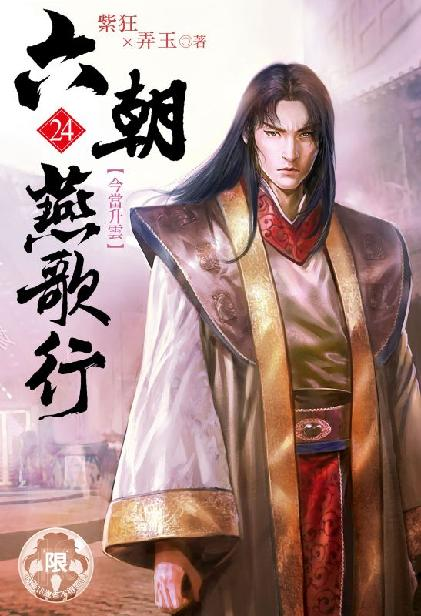

唐国篇
出版日期： 2021年 10月 31日
【本集内容简介】
唐国国势岌岌可危，帝王被宦官们囚禁成为魁儡。
不杀李昂，只能等著朝堂被阉人掌控腐败，杀了，又怕四处藩国得到消息而来进犯……
吕雉从皇宫将萧太后也带回来时，程宗扬正准备给安乐公主开苞，萧氏怯懦，对于程宗扬的要求无不顺从，甚至还帮着程宗扬，掰开了自己女儿未经人事的娇嫩花瓣……
※ ※ ※ ※ ※
正月十八。申时末。
宣平坊。东门。
坊外的吵嚷声渐渐消停，似乎贼人们抢掠得手，已经散去。
一名客商扒在坊门边瞧了半晌，最后心一横，将背后的包裹挪到胸前，紧紧搂在怀里，弯腰贴着坊墙，一路小跑往南奔去。
刚跑出去百余步，街旁的杨树后钻出个人影，举起枣木大棒，二话不说抡了下去，“呯”的一声，结结实实砸在客商的后脑上。
那客商应声扑倒在地，手脚抽搐起来。后面的人影抢上前去，撕扯起他的包裹，只是那客商搂得太紧，一时无法拽脱。
周围人影晃动，几名持刀舞棍的汉子围了过来，恶声恶气地叫道：“哪儿来的蟊贼！也敢来我们的兄弟地盘抢食吃？”
那贼人慌忙丢下包裹，捡起枣木棍，嘴里打了唿哨。
一条大汉从树上跃下，正是与程宗扬有过几面之缘的熊姓汉子，他腕下扣着一柄解手刀，上前刀锋一挑，将包裹划开，里面滚出几件布衣和一小串钱铢。
另一个酒糟鼻也钻出来，握着一支短叉，和方才打闷棍的老十各站一边，跟那伙想黑吃黑的本地帮派对峙。
姓熊的将包裹翻遍也没找到值钱的东西，他还不甘心，将那些衣物又抖了一遍，也没翻出半个子。
那帮无赖见状一阵哂笑，骂了声“精穷的死鬼”，懒得再去理会，一边收起家伙走人，一边商量着换个地方剪径。
拎着枣木棍的老十道：“熊哥，又没捞着，咱们也挪个地儿吧。”
姓熊的将那客商鞋袜都扒了，到底没能翻出藏匿的钱财，气恼之下，随手捅了那客商一刀泄忿。
“走！”
徐君房正在房内用晚膳，刚夹了一箸火腿笋片，还没送到嘴边，便听到下面一阵吵嚷。
他赶紧把笋片塞到嘴里，又掰了半个炊饼，三口两口吞下肚，然后拿茶水漱了口，抹净嘴巴，正了正羽衣玉冠，一派仙风道骨地据席而坐，这才开口问道：“外面出了何事啊？”
守在外面的护卫下去问了几句。
片刻后楼板响动，掌柜亲自上来道：“抱歉，抱歉，惊扰了仙长静修。有位客商年前就住在店里，今天说什么也要走。结果一出坊门，就被贼人们敲破了脑袋，行李全被抢了，还挨了一刀。幸好被程侯爷的人撞见，刚把人救回来。”
徐君房眉毛一挑，“程侯回来了？”
“这小的就不知道了。方才救人的，是侯爷府上一位公公。”那掌柜颇为嘴碎，“嗐，那客商也是个不听劝的，他光看着咱们坊里太平，以为外面也乱不到哪儿去。也不想想，咱宣平坊能太平，还不是全靠着程侯爷坐镇？有不开眼的蝥贼，早让侯爷的人打跑了。如今的长安城里头，也就咱宣平坊还算平安，对面教坊的姑娘们都商量着，要给侯爷备份大礼……”
那掌柜絮絮叨叨说着，徐君房一手按住袖中的水晶球，探入神识。
忽然间，室内响起一声清越的鹤唳，一只白鹤凭空飞出，绕着徐仙长振羽轻翔，翼尖洒下无数星尘。
掌柜张大嘴巴，惊奇地看着这一幕。
那护卫扯着他的衣袖出来，小心掩上门，低声吩咐道：“仙长要入静，接引神明，让下面的人别吵闹。”
掌柜慌不迭地连声应下。
徐君房叹了口气，收了神通，伏案抄箸接着吃了起来。
火腿还是太荤，只能嚼吧些素的，不然自己的穷胃受不住。徐君房换了个舒服的姿势，抱着碗蹲在椅上，都是多年挨饿落下的病根啊。
“中总管，奴婢真没有想到你会去救人，救的还是个穷客商。”孙寿戴着面纱，撩起车帘，讨好地说道。
“给我闭嘴！”中行说目不斜视地喝斥道：“本总管这是日行一善，家门口的事，能放着不管吗？”
就你它么多管闲事！孙寿腹诽着放下车帘，扭头看向车厢内。
吕雉端坐车内，双手放在膝上，长长的衣袖铺在两边，虽然车身颠簸，仍一丝不乱。
一个少女跪坐在吕雉脚边，她朱颜绝艳，虽然眉眼间尚带稚气，却像一枚莹润无瑕的珍珠一样，美得夺目。只不过这会儿像是刚哭过，眼睛红红的，像只委屈的小兔子。
孙寿喝斥道：“让你坐了吗？跪直了！”
安乐嘟起红唇。
“还当你是公主呢？乘车要锦榻暖垫，咳嗽一声就有七八个人服侍？你现在只是个最低等的贱婢，没让你跟着车走就是好的。”
小丫头红着眼圈，泫然欲滴。
“你要是不想当奴婢，眼下倒有个好机会。”孙寿讥诮道：“等到了十六王宅，你反悔还来得及。到时候往你公主府里一躲，我们也不好揪你出来。只可惜便宜了那些太监。”
安乐小声道：“我不要当公主。”
“知道怕了？”孙寿道：“都是你那个该死的哥哥干的好事，害你一个未嫁人的公主，差点儿被那些阉狗糟蹋……”
“你个贱婢，皮子又痒了？”中行说阴鸷刻薄的声音传来，“阉奴就阉奴，说甚的阉狗？你指着和尚骂秃驴呢？”
“都是奴婢的错。”孙寿拖长声音道：“对不住了，中总管。”说着翻了个白眼。
这死太监，不好好养伤，非要跟着出来，刚出门又救了个不相干的客商，时辰都耽误了。真当自己是宣平坊的大总管呢，大事小事破事屁事全都管，你管得过来吗？
一直望着外面的成光突然开口，“到了。”
马车路过一片残垣断壁，正是兴庆宫。孙寿向吕雉看去。吕雉纹丝不动，只将凤目瞟向窗外，用眼神示意了一下。
孙寿将车窗打开一线，把一个半旧的荷包丢过断墙，然后掩上帘子，不放心地说道：“她能看得见吗？”
吕雉道：“她应该会去兴庆宫故地，能不能看到，只能凭运气了。”
“她如今是周族的少夫人，为什么不去让铁中宝帮忙传话？他们都是凉州盟的人。那个铁大哥，也是个热心肠。”
吕雉道：“铁马堂正跟他们争盟主，不是一路人。”
孙寿讶道：“那为什么要找周夫人帮忙？铁马堂跟老爷是朋友，周族又跟铁马堂不对付，那岂不是不跟我们一边的？还有那位左护法……”
“杀死阿暖的，是丹霞宗的柴宗主。”吕雉道：“丹霞宗也在争凉州盟的盟主。左彤芝是丹霞宗的人，反而不好合作。倒是黎锦香，虽然嫁给周族的少主周飞，但兰奴在咸宜观见过她，未必心甘情愿。要给阿暖报仇，不妨找她一试。”
孙寿与成光对视一眼，都觉得此举好生异想天开，但不敢多说什么。
吕雉心下却是笃定，他身上有过黎锦香的味道！跟那个周族的少夫人，肯定有一腿！
马车在十六王宅前被拦住去路，把守坊门的神策军见到汉使的旗号，也不敢造次，但坚称为了守护坊内诸位王公贵人，严禁外人出入。何况天色已晚，换成平常时候，都该打净街鼓了，拦着车马不让通行。
中行说那是什么人？当场就喷了回去，声称自家侯爷特意派内眷前来问候太真公主，敢拦汉使的车，就是不把程侯放在眼里！就是要与汉国为敌！惹得程侯一怒，到时候汉国大军兵临长安城下，在场的全要被砍了脑袋祭旗。
中行说当街大放厥词，喷得守卫差点儿瘫痪。最后惊动了一位有职份的大太监出来，亲自告了罪，掀开车帘看了一眼，确认车内只有女眷，驾车的也是太监本监，这才开门放行。毕竟大伙儿都是没了物件的同行，难免惺惺相惜，多少行个方便——可绝不是怕了中行说的嘴炮。
马车驶入镇国大长公主的府邸，不多时便出了后门，来到安乐公主的住处。
入夜之后，长安城的骚乱毫不意外地迅速蔓延开来。借着夜色的遮蔽，无数人开始蠢蠢欲动。
失去官府的约束，平日里安分守己的良善也被激起贪欲。越来越多的人加入到抢掠的队伍中，白天三五成群的剪径蟊贼，也演变成三五十人的大股匪寇，啸聚坊中，剽掠商贾，甚至公然攻打豪门富户。
当程宗扬返回时，看到的就是这样一幕：城中乱象比昨日扩大十倍不止，到处都是成群出没的恶少贼人，坊间火光四起，百姓人人自危。
路过升道坊时，一群缁衣尼姑从坊中惊惶逃出，哭声不绝。
程宗扬驻马望去，只见几名无赖在后追赶，有跑得慢的小尼姑，被那些无赖捉住，拖进暗巷。
独孤谓按捺不住，纵马上前，喝道：“住手！京兆府参军在此！”
说着挥起佩刀，连鞘拍在一名贼人面门上，将那贼人打得倒跌回去。
那些尼姑哭哭啼啼躲在独孤谓马后，连呼“救命！”
后面的无赖稍稍止步，舞起棍棒道：“京兆府的人谋反，都已经下了大狱！你个孤魂野鬼从哪儿钻出来的？赶快滚！不然打死你都没人管！”
独孤谓怒气上冲，“长安城没王法了吗？”
“嘿哟，你才知道啊？长安城里早就没王法了！”为首的无赖握着棍棒，往地上一拄，狞声道：“咱们兄弟的刀枪棍棒，就是他娘的王法！”
独孤谓不再言语，他一手捉刀，一手握鞘，“锵”然一声拔出长刀，双臂翼张，犹如老鹰一样护着身后啼哭的尼姑。
有人举起火把远远照过来。火光下，独孤郎那张俊脸宛如兰芝玉树，容光照庭，帅气逼人。
立刻有人认出他的模样，失声道：“是独孤郎！”
“哎呀呀，原来是独孤参军，早说啊！”
为首的无赖收起棍棒，笑嘻嘻道：“那几个尼姑欠了我赌债不还，我家里都揭不开锅了，找她们讨债。谁知这帮贼尼为了赖账，竟然反咬一口，跑到街上说我们抢劫。罢了罢了，看在独孤参军的面子上，饶她们一回。”
那帮无赖扶起受伤的同伴，悻悻退走。
躲在马后的尼姑们又惊又喜，“独孤郎！？真的是独孤郎！”
“天啊，他好帅……”
杜泉道：“她们八成是从龙华尼寺跑出来的。程上校，好人做到底，顺路把她们送回寺庙算了。”
升道坊位于宣平坊西南角，穿坊而过也是顺路。
程宗扬打马动身，“进坊。”
那帮尼姑牵衣扯袖，围在独孤谓鞍侧，叽叽喳喳说个不停。到了寺前，才后知后觉独孤郎是要把她们送回寺里，便就此别过。
一众尼姑顿时又啼哭起来，这个说：昨日便有贼人砸开寺门，抢了庙里供奉菩萨的珍宝法器；
那个说：大伙儿惊惶不已，最后躲在庵堂里，才逃过一劫；
还有人说：到了白天，各坊的地痞无赖就像赶集一样，一趟一趟往庙里闯，不但将财物掠夺一空，连佛祖的金身也被刮去大半……
住持“阿弥陀佛”不知念了几万回，终于鼓足勇气，出面给那些贼人讲经说法，劝其行善，结果被兜头一棒，打得不省人事。
众尼慌忙去救，谁知却是羊入虎口，为首的无赖见刮不出钱来，索性叫嚣把这些尼姑绑到青楼卖掉，换几个钱使。那些无赖轰然叫好，几个年轻美貌的尼姑被贼人当场拖走，生死不知。众尼惊惶之下，只得弃寺而逃。只是长安虽大，已无尺寸净土，又能逃到何处？
如今独孤郎将她们护送回寺，却是把她们丢进火坑，到了天亮，只怕无一人得活。
独孤谓被众尼扯住，挣脱不得，只能心虚地看着程侯。
程宗扬也是头大如斗，这些尼姑庙门被砸得稀烂，显然无力自保，把她们丢在这里自生自灭，未免太过残忍。
可自己一个汉国使节，压根儿就不是唐国人，还能怎么管？总不能把独孤郎剃度了，把他丢在庙里，当个保卫尼姑的护花使者吧？
独孤谓还不知道程侯心里转的什么神奇念头，壮起胆子，过来商量道：“要不，把她们带回宣平坊？”
要不真把你剃度了？小白脸长那么帅，混在尼姑堆里，也看不出来。
“带回去扔大街上？”
独孤谓小心道：“侯爷不是有间家庙吗？”
程宗扬没好气地说道：“就你怜香惜玉是吧？”
独孤谓干笑道：“到底都是性命。”
那间法云尼寺只是个幌子，要紧的是沟通内宅的暗道，需得避人耳目，可这事没法儿跟独孤郎说。
两人大眼瞪小眼，最后程宗扬无奈道：“得，带回去吧。你先别高兴，咱们丑话说在前头，你自己揽的事，自己搞定。别想着让我接手，白养一帮尼姑。有这闲心，我还不如把教坊的姑娘们养起来呢。”
“那不能！下官绝不让侯爷为难！”
独孤谓兴冲冲回去一说，身后随即发出一阵欢呼。
程宗扬摇了摇头，这事弄的……还丢了好几个尼姑呢。
好在升道坊就在宣平坊斜对角，走过去也不远。众人刚过了十字街，便又听得一阵叫喊，几名贼人聚在一处朱漆大门前，挥舞着刀斧将大门劈开，然后蜂拥而入。
门内的人家早有戒备，双方棍棒交加，打成一团。到底是贼人势众，不过片刻，那户人家便抵挡不住，一名穿着红色官袍的官员抱头鼠窜，狼狈奔出门来，放声叫道：“救命啊！杀人啦！”
程宗扬定睛一看，“独孤郎！救人！”
那官员幞头被打掉，靴子也掉了一只，脸上一道刀痕，鲜血淋漓，若非口音耳熟，程宗扬险些没认出来这位风度翩翩，出口成章的鸿胪寺少卿，自己的老熟人，段文楚段少卿。
手执凶器，私闯民宅，已经是犯了天条。独孤谓再不留手，当即挥舞刀花，纵马上前，将一名贼人砍翻在地。
那些贼人一时慌乱，随即又凶悍地围上来，进退颇有章法。
杜泉跃下马，摘下鞍侧一对弯钩，上前接应。
混战中，忽然“绷”的一声震响，程宗扬汗毛都竖了起来。这伙贼人竟然携带有弓弩！
临敌不过数步，连独孤谓也来不及躲闪，被一支弩箭射中肩头，箭身透入大半。
一直护在程宗扬马侧的南霁云一夹马腹，暴喝道：“南八在此！”
战马疾驰而出，南霁云摘下凤嘴刀，手起刀落，将那名持弩的贼人连人带弩劈成四段，血肉横飞。
南八出马，犹如虎入羊群，那帮贼人见状不敢恋战，当场一哄而散。
程宗扬此前来回都是走的大街，此时深入坊间，才发现局面比自己想像的还要恶劣百倍。眼下长安城中的治安已经彻底失控，连段文楚这样的高官，都被贼人破门而入，遑论其他？
段文楚认出程宗扬，几乎喜极而涕。所幸他是官宦世家，风度还是有的。上来不卑不亢地长揖一礼，说道：“多谢程侯，段某，感激不尽！”
这句话发自肺腑，字字千钧。
“老段，原来你住这儿啊？家里这是……”程宗扬看了眼只剩下破烂门框的朱漆大门，“算了，收拾收拾东西，到我那边避避吧。”
“东西都收拾好了。”段文楚连忙道：“我原本就打算出城避避呢。宣平坊好，还是宣平坊好！”
片刻后，随行的队伍除了一群尼姑，又多了段文楚一家老少。
“老段啊，”程宗扬在马上问道：“你是不是得罪了什么人？”
段文楚脸上的刀口不深，这时用巾帕按住，跟在马侧，“这话从何说起？”
“你们唐国不会这么阔吧？连贼人都用上弩了？”
“侯爷是问这个？”段文楚苦笑道：“那可不是一般的贼人，多半是宫中翊卫乔装打扮。”
“那你还说没得罪人？这些宫里当值的卫士，不会是阉党指使的吧？”
段文楚掩面长叹一声，“长安恶少出名字，楼下劫商楼上醉。天明下值明光宫，散入五陵松柏中……”
段文楚吟诗一阙，然后叹道：“侯爷有所不知，长安城的翊府卫士，颇有些胆大包天的恶徒，白天是官军，夜里就是劫路行凶的贼人。这回只是运气不好，家里招贼。倒不是专门来寻段某的晦气。”
还有心情吟诗呢，看来老段的心态还行。自己在唐国没有刻意交游，打过多次交道的段文楚也算是熟人了。他今晚若是出事，自己心里很难过得去。
从升道坊穿坊而过，临近坊门，两侧的背巷不时传来惨叫声，甚至还在坊外的沟渠中看到一具女尸，身无寸缕，头无青丝，依稀是龙华尼寺被劫走的尼姑。
程宗扬越看越是心惊，最后只能硬起心肠，对周遭的乱象视而不见，带着众人匆匆返回宣平坊。
贾文和路过厢房，只听得一阵杀猪似的叫声。那位独孤参军精赤着一身雪白的腱子肉，被人赤条条按在榻上，铁中宝跟杜泉按着他的手脚，南八含了口酒，往他肩上一喷，然后亲自操刀割开皮肉，将一枚血淋淋的箭矢挖了出来。独孤郎君俊脸扭曲，额头青筋霍霍直跳。
贾文和不动声色，一路来到内宅，拉开静室的房门。只见主公半敞着衣衫，席地而坐，一名体态丰盈的艳妇被他抱在膝上，罗衣半褪，正在上下把玩。
程宗扬尴尬地放开滟奴，“贾先生，这么快就过来了？”
“主公有召，岂敢怠慢？”
程宗扬示意滟奴退下，心头千言万语一时不知从何说起。
贾文和注视着他，“主公为何忧虑？”
程宗扬苦笑道：“很明显吗？”
“主公内宠虽多，但在吾等面前，行事向来端正。若非忧虑难解，何至放浪形骸？”
程宗扬总不好说自己看到城中的乱象，心中郁气难解，一生气又恼上李昂这个罪魁祸首，索性将杨贤妃拿来撒气。
“贾先生，我这两天在城里走了几处，局面实在太乱了。没有官府的管束，什么妖魔鬼怪都钻出来了，生灵涂炭啊。”
“主公身为异邦使者，要插手唐国政事么？”
“想想法子嘛，方才鸿胪寺的段少卿，都险些被恶贼破家。你知道主公我是个滥好人，这样坐视不理不合适吧？太虚伪了对不对？你也不想主公是个大奸似忠的伪君子吧？”
贾文和沉默片刻，“主公想管到哪一步？平乱，还是治安？”
程宗扬笑道：“我就知道你有法子！哎，这两个有区别吗？”
“平乱是平定如今城中的乱象，治安乃是今后的长治久安。”
“长安城乱成这样，平定起来也不容易吧？京兆府、金吾卫、御史台，这些衙门的主官吏从都被下狱，想让仇士良他们放人肯定不可能。”程宗扬拧眉思索道：“要是出动神策军，我怕长安城比遭贼还惨。兵匪一窝，百姓们可要倒大霉了。”
“平乱易事耳，只需主公说动卫公，乱象旦夕可定。”
“天策府？”程宗扬疑惑地说道：“他们才几个人？长安城一百零八坊，这两天参与抢劫的，起码有好几万。天策府的爷儿们再能打，放几万头猪也得抓十天半月的吧？”
“卫公自有对策。”
程宗扬似信非信，又问道：“那长治久安呢？”
“敢问主公，如今唐国局势如何？”
“狗屎局吧。李昂那个皇上被囚禁在蓬莱秘阁，太监们一手遮天，百官只能俯首听命。”
“将来如何？”
“将来？那些太监吃了大亏，眼下既然拿捏住李昂，肯定是逮着蛤蟆攥出尿来。朝中官员敢不听话，轻则废黜，重则下狱。”
“中枢威信扫地，诸镇又会如何？”
还能怎么样？历史上，李昂被软禁后还活了好几年，宦官把持君王，恣行废立，猖獗无比，唐国朝廷威信尽失，再无力挽回藩镇割据的局面，最终崩成一地碎片，花了上千年都没能再拼起来。
“藩镇彻底割据，最后撑不下去，大伙一块儿散摊子。”
“如此，若要长治久安，眼下正是关键。”
“哦？”
贾文和道：“请主公借李昂首级，以安天下。”
程宗扬张大嘴巴，怎么突然蹦出来借李昂头颅一用？李昂一死，那不是火上浇油，乱上加乱吗？
他拍了拍额头，飞快地转着脑筋。唐国局势已经坏得不能再坏，李昂如果驾崩，局面还能坏到哪儿去？接下来呢？唐国势必拥立新君。李昂子嗣夭折，剩下的无论弟弟还是侄儿，都是成年人，不会出现幼主当国的局面。新君继位之后，再菜也不至于比李昂还不如。
也就是说，李昂死得越早，唐国的局势越能及早安定，有更多的时间和机会重树朝廷的威信……
程宗扬捏着眉心。李昂满盘皆输，再没有翻盘的可能，已经是彻底的负资产了。他活得越久，对唐国的伤害也越大。
“意思是长痛不如短痛？”
贾文和长揖一礼，一言不发地退下。
干掉李昂？还是就这样拖着？
这他娘的还真是个问题。
李昂只要还活着一天，就是唐国名义上至高无上的君王，即使这位皇上已经沦为太监们的傀儡——甚至连傀儡都不如，只是太监们手里一团烂泥，随意捏扁揉圆。
他多活一天，唐国的政局就得在泥潭里多沦陷一天，看不到任何希望。
他什么时候驾崩，唐国政局什么时候才有重生的可能。
可是弑君？
程宗扬并不觉得什么皇权神圣不可侵犯，但李昂好歹是一国之主，哪儿能杀鸡一样随随便便给杀了？
李昂驾崩，宦官们会怎么反应？
宗室呢？
官员呢？
百姓呢？
那些野心勃勃，割据四方的藩镇呢？
本来唐国摊子再烂，还能维持好几十年，这一剂猛药下去，会不会唐国没救过来，直接就崩了？
程宗扬一时间陷入沉思。
大明宫。蓬莱秘阁。
沉香亭前，刘贞亮已经不成人形。他一只手被剔得只剩下森森白骨，头皮也被剥下一半，耷拉在眼睑下。
空气弥漫着一股臊味，不止一人被吓得尿了裤子。
程元振拿起刘贞亮另一只手，从指尖开始，一截一截捏碎，一边捏，一边仔细询问。
最后他擦了擦手上的血迹，“回王爷，看来太皇太后并不知情，都是这该死的奴才自作主张。”
刘贞亮脸上血肉模糊，两只眼睛浸在血泊中，死死盯着李辅国，嘴巴在掉落的脸皮下蠕动着，嘶声道：“绛王当立！”
“你是老糊涂了啊，这话是奴才该说的吗？”李辅国无奈地摆了摆手，“拖下去，埋了吧。”
“该死的狗贼！我做鬼也饶不了你！”
“找条大路，明白吗？”李辅国又叮嘱了一句。
“小的明白！”程元振道：“让这奴才就算死，也要被千人踩，万人踏。”
刘贞亮尖声道：“李静忠！你不得好死！”
“我的本名怕是没多少人知道了，”李辅国喟然叹息，“当年的老伙计，可是死一个少一个喽。”
四下鸦雀无声，所有人都垂首听训，不敢有一丝动静。
刘贞亮还要再骂，被程元振捏碎下颌，顺手撕下耳朵，塞进口中，又封了哑穴，像提条死狗般提了出去。
几名内侍上来换掉浸透鲜血的地毯，又拿了手巾，趴在地上将青石地板擦得一尘不染，然后铺上一条崭新的地毯，点上檀香。
李辅国目光从众人身上一一扫过，忽然一顿，迸出一丝精光。
他招了招手，“那个娃娃，过来。”
罗令一颗心几乎要跳出腔子。
没错，东家又把他给落下了。
罗令本来打定主意，无论如何也要抱紧东家的大腿，说什么也不放手。谁知东家走得那叫个利落，真就跟飞一样，罗令只觉眼前一花，人就没影了。
他不敢靠近精舍，又找不到路出去。这秘阁实在太大了，在屋里头居然还得跋山涉水，他觉得自己这回要能活着出去，光是这间房子都够吹半辈子的。汪臻那个破落户，做梦都想不到天下还有这么大的房子。
屋里倒是不冷，就是饿得受不了。那只白毛神狗被那个漂亮公主拎走，再也没有回来。罗令饿得眼花，躲在石头缝里打了个盹。
迷迷糊糊中，被人揪着耳朵尖声斥骂，“惫赖腌臜的贱胚子！跑到这儿躲懒呢！打折你的狗腿！”
罗令迷迷瞪瞪被揪到亭子前站好，才发现阁里忽然多了许多人，来来往往的都是太监。他穿着内侍的服色，在里头毫不起眼。
罗令肚子咕咕直叫，等那个老太监被人扎紧手臂，用尖刀一片片镟去手上的皮肉，他才激灵一下清醒过来。
他不认得那个老太监是谁，只听着他好像是跟一个光头合谋，要暗害自己东家，让唐国那个傻瓜皇上背上罪名，然后等汉国打过来，就名正言顺地废了他，换成别人当皇帝。
罗令懵懵懂懂的，只勉强记下对话，想着等见到东家，好跟东家说。
这会儿众人的目光都落在他身上，罗令到底是个小毛孩，胆子再大这会儿也禁不住腿软，牙关“格格”发抖。
两名黄衫内侍架起他的手臂，将他拖到软舆前。
李辅国笑眯眯道：“你是怎么来的啊？”
罗令颤声道：“东……东家……”
“不用说了。”李辅国意味深长地看了他一眼，“怪不得没有吓尿呢。过来吧，就在这儿待着。”
众人立刻露出羡慕的眼神，看着这个面生的小太监被安置到王爷身后，最光彩体面的位置。
程元振进来道：“刘贞亮那狗贼已经带下去了，就在丹凤门内挖个坑，把他填里头，进出的时候，谁都能踩他一脚。”
“事君不忠，就是这样的下场。”李辅国道：“小鱼，你说呢？”
鱼弘志也被带了进来，他脸色惨白，“王爷……说得是！”
“六根不净，输个干净。给你净净身，也好长长记性，免得你们鱼家的人脑袋发昏，走岔了路子，提着猪头拜错了庙门。”
李辅国嗤笑了一声，“鱼朝恩那老东西，一直跟咱家装傻。真以为搬出姓岳的，就能吓住老夫？他要再不识趣，下回去的就不是曲江苑了，待在水里得了。反正曲江池够大，足够给他这条老鱼精养老了。”
“多……多谢王爷提点。奴才一定转告鱼公。”
“告诉帛九，他一个小辈，咱家看在老爷子的面子上，不去理他。再敢搞东搞西，说不得要让老爷子动动，亲自来长安领人。”
“小的明白。”
“小仇。”
仇士良赶紧上前，“王爷。”
“这回你是辛苦了。”
“不敢。为王爷效力，是小的本分。”
“在外面好好干。后头的事，都交给小鱼，你就别插手了。”
仇士良大松了一口气，“奴才遵命。”
鱼弘志脸色煞白，“王爷，小的不想……”
李辅国叹了口气，“这种事谁想呢？你不想，我也不想，对吧？可事总得有人干。给他。”
程元振捧着一只托盘，放在鱼弘志面前。盘上摆着一条白绫，一柄金剑。
外面忽然传来一阵嘈杂的声响。
霍仙鸣躬身道：“禀王爷，五坊小儿已到。”
李辅国叩了叩扶手，众人立刻抬起软舆，护拥着这位手握权柄，口含天宪的博陆郡王离开秘阁。
罗令也想跟上，却被李辅国摆手示意，“既然是你东家让你过来的，你便留在这儿，替你东家仔细看着，也好让他放心。”
罗令立在原地，茫然不知所措。等他回过神来，原本坟墓般死寂的秘阁忽然变得热闹非凡。
秘阁顶部巨大的金盆已经点燃，耀目的火光将阁中映得亮如白昼。无数少年架鹰牵犬，在山野湖沼间游弋。来自雕坊、鹘坊、鹞坊、鹰坊、狗坊的金雕、青鹘、白鹞、苍鹰、黄犬，或飞或走，宛如春日的山原，一派生机勃勃。
精舍所在的山峰下，乐舞百工和梨园子弟们吹笛抚弦，击鼓奏乐。几条花舫驶入湖中，教坊的红粉歌伎立在船头引喉而歌，岸上，无数身着彩衣的舞伎踏歌起舞。
歌舞升平，长乐未央。
耳乱五音，目迷五色。
飞鹰走犬，长歌竟夜。
陶然忘忧，此乐何极！
令人心醉神驰，不知今夕何夕。
“干爹，”郄志荣小声道：“王爷到底是什么意思？”
“别问！”仇士良铁青着脸，从齿缝间吐出几个字，“连想都别想！”
郄志荣立刻缩了回去，过了会儿又道：“李训那狗贼怎么办？”
仇士良不耐烦地说道：“哪里还顾得上他？先关牢里！”
“都关起来？”
“怎么这么多废话！”仇士良怒道：“方才没听见王爷说的吗？外面的事都交给我了！不赶紧想辙把城里的乱事平定了，想让我也埋门洞里头是吧？”
郄志荣赶紧噤声。不敢再提带回来的还有个光头大和尚……
仇士良方才倒是没吓尿，就是腿肚子有点儿转筋。
别人不知道，他还能不知道？王爷的六道神目能明辨真伪，给刘贞亮用刑，哪里是要什么口供？王爷他老人家纯粹就是来玩的。跟王爷玩，刘贞亮这老东西玩得起吗？瞧瞧，人都给玩碎了。
王爷那句“在外面好好干”，让仇士良愁得几乎要揪头发，外面什么样他不是不知道，从含元殿一眼看过去，清楚着呢。
招贼的里坊他都能数过来，一百零八个，一个不少。也就是舞阳程侯所在的宣平坊，皇图天策府所在的永嘉坊安稳些。别的坊那都跟烧滚的油锅一样，吱吱作响，青烟乱冒。眼看着弹压不住，要出大乱子。
本来仇士良并没有把这当个事儿，再乱还能乱到宫里头？只要自己太平，管别人去死呢。
但乱成这样，显然惹得王爷不高兴。这就是个事儿，而且是顶天的大事了。
想把这锅热油给弄凉了，谈何容易？京兆府和金吾卫的人都在牢里关着，要让这伙反贼活着出去，对得起自己五个孩儿九个蛋吗？仇士良恨不得把他们全给活埋了才解恨。
官府指望不上，能用的就是自己掌管的神策军了，不是仇士良不信任自己手下这帮军汉，实在是太知道那些鸟货多操蛋了。把他们放出去，等于长安城里突然多了好几千的贼。那场面，王爷要不把自己皮扒了，拿盐腌半年，再挂到城门楼上风干，自己的仇字倒着写！
就算老天开眼，那帮混帐东西突然转了性，忠心耿耿想要平定乱局——不是自己故意长他人志气，灭自己威风——他们也没这个本事。
一百零八坊，成千上万的贼人，一个坊放六七十个神策军，回头再让贼人给剿了，那乐子可就大了。
咋办？
仇士良忽然发现，自己好像没啥处理民政的经验。收拾皇上、大臣，自己手拿把攥，对付百姓，这活儿不熟啊。总不能去问田令孜那死鬼吧？田令孜已经被王爷打发上路了，想问他，这辈子是赶不上了，除非找人通灵。
要说通灵，徐仙师和他那位散仙至交鸿都客，倒是有这个神通，可自己真要混到去找田死鬼讨主意，脸还要吗？
“明日是朝会，让京城的百官都来上朝！”仇士良恶狠狠道：“中午就在含元殿用膳，备些泔水窝头，不拿出主意来，就让他们吃喝拉撒睡，全在殿里！”
“这个……”郄志荣硬着头皮劝道：“爹，三思啊。”
“三思个屁三思！为老百姓办事，还讲什么体面？把王铎给我叫来！今晚别睡了，点灯熬油也得给我拿个章程出来！干得好，王涯的相位就是他的。拿不出来，一并按乱党处置！”
仇士良咬牙切齿，“杀他全家！”
打定主意之后，程宗扬没有顾得上去看望飞燕，便戴了顶兜帽，策骑从角门出来，入目的情形使他大吃一惊。
“怎么回事？”
宣平坊并不是热闹所在，比起寸土寸金的平康诸坊，算是个清静住处。然而此时，从自己家门口出来，一直到十字街心，原本冷清的街道被挤得满满当当，无数人扶老携幼，拖家带口，挤在屋檐下遮风避寒。
一个黑衣太监带着人沿街指点，哪里施粥，哪里生火，哪里划出区域，命人围上草席，让男女分开便溺，林林总总，巨细无遗。
坊正跟在中行说屁股后面，跟个狗尾巴一般，指哪儿打哪儿。除了本坊的坊卒，汉、宋两国的护卫也被使唤起来，在街头维持秩序。
童贯道：“都是周围各坊来避难的。”
“不是吧？我回来的时候还没这么多人啊？”
“白天有伙贼人混进来想作乱，被中总管带人拿住，砍了脑袋挂在坊外，严禁外人出入，外面人也不敢来。后来……侯爷回来时候带的人多，周围的百姓看见，都纷纷来投。中总管说，侯爷有好生之德，不能寒了百姓的心，下令尽数接纳。先是腾出空宅安置，后来安置不下，只好留在街上。”
石超陪着谢无奕出来，说道：“为这中总管还跟前郡王高霞寓吵了一架。高家房舍多，中总管让腾出几间，高郡王不答应，说他谋夺自家产业。中总管那脾气，郡王也不惯着。当场放了几句狠话，可把高郡王吓得不轻。”
“干！”
看着街头的人群，程宗扬头皮一阵发麻，中行说打着自己的旗号收容百姓，固然是在作善事，可这隆冬天气，万一天降大雪，街上的人起码得死一半！
本来还觉得有些腾挪的空间，突然间可就迫在眉睫了。这事无论如何也耽误不得，还是早些平定为上。
“石超，你多帮帮忙，柴火热水不能断了。我去找卫公想办法，及早把人都送回去。”
石超拍着胸口道：“老大，尽管放心好了！”
南霁云牵着马，避开街旁的百姓，段文楚和谢无奕也策骑跟上。
此时已经入夜，虽然道旁燃着篝火，仍寒意侵体。远处隐隐传来婴儿的啼哭声，又被大人喝止。
程宗扬勒住马，叫来中行说，低声道：“这样不行，你去请教坊的姑娘们帮个忙，就在街上搭几个台子，有什么唱什么，歌舞百戏都行，备上汤水点心，闹个通宵！赀费按平常的两倍给，先把今晚顶过去，就当是过节了。”
中行说一口答应下来，把养伤的独孤郎拽上，一起去敲教坊司的门。
程宗扬不再迟疑，快马加鞭往天策府驰去。
程宗扬心急如火，此时的安乐公主府上，却暴发了一场争吵。
“我要找姑姑！”
孙寿从鼻孔里嗤笑一声，“你姑姑已经死了。”
“你骗人！”
“不信？一会儿我就把她头拿来让你看。”
“骗人精！”
“什么骗人精？人家可是狐狸精。”
说着，面前那张妖娆的面孔逐渐出现一丝丝细微的变化，尖尖的下巴变得圆润，眼睛从妩媚的桃花眼变成明丽的凤目，红唇变得饱满柔润，一股逼人的美艳喷薄而出。
安乐公主张大眼睛，“你……”
那张与太真公主有七八分相像的玉靥嫣然一笑，阴恻恻道：“我把你姑姑吃了，就变成了她的样子。”
安乐几乎要尖叫起来。
耳边忽然传来一声冷喝，“收了！看见那张脸我就想吐！”
孙寿赶紧变成原样，“是。”
安乐心里兀自怦怦直跳，“你……你们……”
“你以为让你当个婢女辱没你了吗？我们程家内宅，便是浣衣奉巾的小婢，也非同凡俗。也就你跟滟奴一无所长，”吕雉嫌弃地说道：“十足的废物。”
孙寿道：“不如赶出去好了。留在宅里，反而是累赘。”
“不要……”
孙寿板起俏脸，“跪下来求我。”
安乐一脸的不情愿，最后还是跪下来，小声道：“求求你……”
孙寿与成光交换了一个眼色，“傻里傻气的，一点儿都没有你姑姑乖巧。”
“啊？”
成光道：“当日你那位姑姑求着要入内宅，可是跪下来舔姐姐的脚。”
安乐期期艾艾道：“不……不会的……”
“你当你姑姑多高贵呢？我们侯爷内宅的奴婢，讲究的是德容言工，容貌、谈吐还在其次，要紧的是顺从之德。你姑姑为了入内宅，可是脱光了被我们验过身子。”
“为了证明她是原封货，你姑姑还自己扒着阴门，让我们检查她的处女膜是不是完整。”
“我最喜欢玩你姑姑的奶子了，又圆又大，正适合拿来暖脚。”
“还有屁股，肏起来好舒服……”
孙寿与成光你一言我一语，将不谙世事的安乐说得花容失色，她眼中的世界就仿佛一个七彩的肥皂泡一样，被风一吹便破灭无痕，露出令人战栗的一面。
“我们侯爷内宅的女子哪个不是国色？数下来，就你最小，身量未足，要奶子没奶子，要屁股没屁股的。”
“长得也最丑。啧啧，还宗室第一美女呢，瞧这梅妆，边缘都褪色了。”
“怪不得侯爷没有收用你，什么庸脂俗粉，老爷才看不上眼。”
“别哭了，来，姐姐给你擦擦眼泪。”
“服侍娘娘，是你的福气，日子久了你就知道，我们汉国女子最是大方。”
“内宅就是狼窝，你运气好，没遇到蛇奴、罂奴那几个。不然早被她们拿去当成玩物消遣了。”
“只要你乖乖听话，我们姊妹会罩着你的。”
“笑一个！真乖。”
“嘴角再翘起来一些。要甜一点，主子才喜欢……”
一直默不作声的吕雉微微抬起下巴，冷眼旁观着这一切。
安乐年纪尚小，又在宫中长大，不识人间疾苦。虽然性子有些骄纵，但也是被母兄备加宠爱的结果，如今突遭大难，早已经六神无主，面对心肠歹毒的孙寿和成光，完全不知所措。在她们的唇枪舌剑之下，被打击得体无完肤。
漏下初更，吕雉站起身，然后在安乐惊骇的目光下，张开一对羽翼。
漆黑的羽毛宛如浓到化不开的夜色，在她身后舒展着缓缓伸开，接着羽翼一振，拔地而起，从敞开的窗口飞出，瞬间融入夜色。
“吁！”仇士良勒住马匹，抬头望着夜色下城堞森严的门楼。
自从草匪之乱后，朝廷罢天策府兵权，收归内臣。天策府诸将就此赋闲，只在战时奉诏出征，平常不允许调动一兵一卒。
皇图天策府名将云集，战策独步天下，六朝武人无不以入天策府为荣，府中培养出的军将遍布六朝，无人敢小觑天策府，不过对仇士良这种权宦来说，天策府就是个十足的清水衙门，一点儿油水都没有。
随行的内侍上前叩门，仇士良整了整衣冠，待大门“吱呀”一声打开，立刻堆起笑脸，“卫公在府里么？”
天策府大堂内坐着数人，李卫公儒袍银甲，对面坐着一位，却是舞阳程侯，下边坐着一名包着脸的士人，还有一名青衣，持笛悠悠吹着，倒是惬意得紧。
仇士良眼珠顿时一转。他一个时辰前召来王铎问策，结果这位出身世家的宰相夸夸其谈，却言不及义，口若悬河，胸中实无良策。滔滔不绝说了一个时辰，半个能用的主意都没憋出来。
仇士良大怒之下，批手给了王铎两记耳光，把这位相貌出众，满腹经纶的当朝宰相打得昏厥在地。
仇士良这会儿也想明白了，真不是王铎无能，实在是这事真不是这样干的。不用官府，还想把事给办了。这不就跟指望着先当了太监，再生儿子一样吗？没那个功能啊。
情急之下，仇士良再顾不得什么脸面，拿出杀手锏：派人去请徐仙长问计。
结果徐仙长称子时引神，未曾露面，只从门缝里递出一张两指宽的小纸条，上面写着六个字：事不谐，找卫公。
仇士良攥着纸条直奔天策府，原想着抹下脸来，狠狠捧卫公一番，拿出自家炉火纯青的正宗马屁工夫，把卫公拍舒服了，但看到堂上的程侯，他眉头一皱，计上心来。
遣将不如激将，求人不如胁迫！这可是个机会，捉到了卫公的把柄！
仇士良一扫方才的低眉顺眼，胸膛高了，气也足了，一手扶着腰带，一手甩着大袖，昂首阔步地踏入堂中，皮笑肉不笑地说道：“两位在聊什么呢？这么开心啊。”
程宗扬笑道：“仇公，请坐。”
“不坐了，不坐了。城中乱成这个样子，咱家也坐不去。”仇士良阴阴笑了一声，“咱家怕贼人惊扰了卫公，过来问安。却没想到会遇见程侯，哈哈。”
仇士良尖厉的笑声突兀响起，又戛然而止，森然道：“卫公深夜私晤外邦使者，这是要做什么啊？”
私会外邦这种罪名，可大可小，往大里说，里通外国，欲图不轨，罪名足以灭族。若是有心回护，一句人情往来，便能大事化小，小事化了。
仇士良倒不是奔着给卫公灭门来的，只不过他在宦场打滚多年，理政的本事没有，倾轧的技能却是点满了，抓把柄、揪辫子这种手段早已融入血脉，几乎成了本能，卫公这边漏出破绽，顿时见猎心喜，上来便扣个帽子。
程宗扬道：“不行吗？”
“程侯这话说的，”仇士良冷笑道：“眼下城中不靖，两位深更半夜，灯下对晤，由不得咱家不多想啊。”
“这你可想多了。”
程宗扬从袖中掏出一柄折扇，“啪”的打开，从容自若地扇了起来。
隆冬季节，还扇风？铁定有鬼！仇士良狞声一笑，正待加点压力。旁边的青衫文士放下笛子，抱怨道：“你眼里只有程侯，就没有我谢无奕吗？”
仇士良仔细一看，气都不打一处来，你堂堂晋国使节，装什么风流呢？我还当你是乐工呢！
那名包着脸的文士尴尬地举起手，“怪我，这事怪我。”
“老段？”仇士良纳闷道：“你咋在这儿呢？你官服呢？穿便装搞毛呢？脸上怎么了？”
“家中不幸遇贼，若非程侯授手，段某阖门性命难保。”段文楚悲声诉道：“如今段某有家难归，只能露宿街头。百般无奈，唯有请侯爷帮忙，送在下来天策府。没想到犯了仇公的忌讳，是我该死。”
段文楚一边说，一边拜倒谢罪。
“别别别！”仇士良赶紧拦住。
有鸿胪寺的人在，这事儿就是经公了。何况还是两国使节同行，私晤也谈不上。得说卫公半夜还在操劳公事，果然是国之干臣。
“开玩笑呢，你还当真了。咱们谁跟谁啊，是吧？卫公？侯爷？谢公子？”
仇士良没抓到把柄，果断唾面自干，只当自己刚才放了个虚屁，厚着脸皮登堂入坐。
“那帮乱党太混账了！”仇士良到底心虚，不等众人开口，便扯开话题，痛心疾首地说道：“犯上作乱不说，还侵扰百姓，简直是死有余辜！”
“可不是吗！”程宗扬摇着折扇道：“连我宅中也被贼人抢了，为首的竟然还是个和尚，你说可恨不可恨？”
仇士良拍案道：“太坏了！指定是乱党！”
“本侯是外邦人，贵国的情形，本侯也弄不清楚。只能仰仗仇公公，给本侯讨个公道了。”
“放心吧，包在我身上！”
段文楚赶紧道：“还有我！”
仇士良大包大揽，“也包我身上！”
“我呢？”
仇士良眨巴着眼睛，“怎么……谢公子，你也遇贼了？”
谢无奕坦然道：“我有个相好遇贼了。”
仇士良懵懂道：“谢公子的相好……”
“平康坊的。”
“哦……”
妓女啊！你丫真有脸说！
“仇某身负皇恩，责无旁贷！”仇士良赶紧扯回话头，“卫公，我这不是求到你面前了吗？城里可真不能再乱下去了，百姓们受苦哇。我在宫里看见，心里头……就跟刀绞似的。”
仇士良扯起衣袖，在眼角按了按，做足了气氛。
李药师开口道：“平乱可以。”
仇士良大喜过望，他原想着还且得扯皮呢，武人就是痛快！
不过天策府真有这本事？他不会是阴养了三千死士，这会儿拿出来立功吧？
不该啊，天策府的钱粮自己心里有数，能克扣的全克扣了。光是养名册上的人都紧巴，哪儿有空饷可以吃的？
仇士良玩惯了阴谋，眨眼间转了一百多个念头，一边拍着大腿道：“咱家就知道找卫公是找对了！卫公你看，城中的乱状，得多久才能平定？”
“一日即可。”
仇士良手一抖，差点儿把大腿拍断。真能吹牛逼啊，天策府现在满打满算有三百号人吗？好几万没王法的贼人，一天就能搞定？
“卫公真是……”仇士良竖起双手的大拇指，“咱家服了！咱家就等着看卫公的捷报，哈哈哈哈。”
仇士良干笑几声，却无人应和，自己也有些讪讪的。
仇士良扯了扯袍角，肃容道：“不知卫公何时能率领诸将出动？”
李药师默然不语。
刚才牛逼还吹得震天响，这会儿怎么不说话了？
仇士良暗自嘀咕，忽然心里一亮，明白过来。这是等自己给说法呢，要好处还不肯直说，矫情！
仇士良拍着胸口道：“只要咱家能帮得上忙，卫公尽管吩咐！”
“二百匹马，二百套甲胄。”
“好办！咱家这就命人准备！保证是最上等的战马，最精良的铠甲！”
“粮秣、军饷。”
“记下来！”仇士良吩咐随行的义子，“历年拖欠的钱粮全部补齐！再从宫里支一笔款子，补偿天策府诸位将军。”
“还有终南山下的苑林，原本是天策府的骑兵训练场，多年前被宫里的内臣借作他用。”
“没还吗？”仇士良勃然大怒，“这帮混账东西！卫公放心，我回去就挨个拷问，谁干的，我让他一路跪到天策府，给卫公请罪。”
“还有太真公主。”
仇士良一时愕然，请那尊不着调的大神干嘛呢？是嫌长安城不够乱吗？
郄志荣在他耳边小声说了一句，仇士良一拍大腿，“净街虎啊！”
仇士良这会儿终于开始相信，卫公不是吹牛逼，这事儿没准还真能成！要是不成，都不用自己报复，太真公主头一个就得跳脚。
可转念一想，卫公答应得实在太痛快了，以自己的君子之心，度卫公的武人之腹，这事儿不会是有诈吧？
仇士良满脸堆笑，“看来卫公胸有成竹啊。仇某说句不该说的——莫非卫公早有定计？”
果真是宫里的太监，心思阴损惯了，话一出口就藏着钩子。
李药师不动声色，“且问程侯。”
“你以为我干嘛来这儿呢？”程宗扬没好气地说道：“我都在卫公这儿求了半个时辰了，说的就是这事。”
仇士良恍然道：“原来又是托了程侯的福。”
程宗扬摇着扇子道：“我和谢公子目睹长安乱状，不忍坐视。正好段少卿要来见卫公，便冒昧来此，求问对策。这里头若是有哪些不合规矩的，还请仇公公多担戴。”
“侯爷这话可折杀我了！”仇士良苦着脸解释道：“两位别生气，都是让那帮乱党闹的，我都快成了惊弓那鸟。”
仇士良一手把持君王，屠戮众臣，要算是朝野瞩目的头等大事，可偏偏卫公和程侯只字不提，仇士良暗暗松了口气之余，也揣摩出对方的心思。
有时候不开口也是表态——看来皇上真是把这两位得罪狠了，生死不问。
得到卫公的承诺，虽然心里还有些没底，但有人垫背，还是天策府这种实力派，也足够解燃眉之急。仇士良心头的大石落下，又卖力拍了几句马屁，这才告辞。
等仇士良离开，程宗扬好奇地说道：“博陆郡王与卫公到底约定了什么？”
“生死之约。”李药师道：“不是同生，便是共死。”
程宗扬心里没来由的一阵狂跳，干笑道：“什么事能让你们两位都赌上生死了？”
“今日十八，明日便是朝会。”李药师道：“你若有意，今晚还能见他最后一面。”
程宗扬压下心底的不安，干笑道：“谁？”
李药师儒袖一摆，“我醉欲眠君且去，明朝有意抱剑来。”
从天策府出来，段文楚脸色发灰，似乎有些魂不守舍，上马时接连踩错几次马镫，险些跌倒。
谢无奕倒是意态从容，潇洒得紧，张口便道：“老程，咱们是不是该准备换国书了？”
段文楚身子一歪，差点儿掉下来，被程宗扬一把扶住。
他浑身哆嗦了一会儿，忽然掩面大哭，“主忧臣辱，主辱臣死！国家如此，吾侪尽皆不忠不义之徒……先祖在天有灵，罪臣不肖，宁不愧杀……”
程宗扬找不出安慰老段的话，或者说，也无意去安慰他。
来之前，程宗扬思索再三，到底还是没有采用贾文和借李昂首级以安天下的计策，只选择了更温和的平乱，因此亲身造访天策府，请卫公出手。
坦白说，程宗扬对此是抱有疑虑的，毕竟天策府的人马太少，一个坊放俩勉强，放仨肯定不够。对于乱象如火如荼的长安城来说，不啻于指望用一杯水，浇灭满城大火。
但卫公偏偏从容应诺，并无丝毫为难。程宗扬都有些怀疑他是不是跟老贾狼狈为奸，对眼下的局面早有定计。
得知李辅国亲入天策府，与卫公定下生死之约，程宗扬禁不住浮想联翩。会不会是卫公早就不耐烦李昂那鸟货，才跟贾文和默契挑事，逼李辅国应诺除掉李昂？
无论如何，李昂已经是个死人。如果自己没有误解，今夜子时，便是他的死期。
程宗扬望着巍峨的大明宫，不由心潮起伏。城中火光四起，而大明宫上，数日前灯火辉煌的木楼尚未拆除，宫中却一片漆黑。
谁能想到，此时此刻，一场弑君大戏正在深宫中上演，而这出戏的主角并非李昂，他只是一件注定被废置的道具。
蹄声渐远，程宗扬靠在一株杨树后，远远看着打着舞阳侯旗号的马车驶出坊门，这才回过身，带着一丝愧疚道：“老贾要是知道我又把人甩开，独自行动，非气死不可。”
“苏沙刚刚逼走了李宏。”黎锦香从黑暗中现出身影，“唐国的广源行，如今已经是波斯胡商的天下了。”
程宗扬对广源行内部的情形有些好奇，“他们怎么自己斗起来了？”
“帛九不管事，总有人想多管一些，又有人不想被人多管一些。”
一个商行都这么多事，只能说权力争夺无处不在。程宗扬摸了摸下巴，“那苏沙怎么没趁机把李宏杀了？现在长安大乱，多好的嫁祸好机会。”
“他是怕我说出去。毕竟我知道的太多，又不能把我也杀了。”
程宗扬关切地说道：“他不会对你下手吧？”
黎锦香露出一丝嘲讽的笑意，“你可知道，苏沙今日往宫里送了一万金铢，丝帛香料如是。”
“这可搭上线了？”程宗扬啧啧赞叹，别的不说，人家这嗅觉和行动能力堪称一流，是个人才。
广源行原本选择与田令孜、李昂一边，看到风头不对，立刻跳船，扭头又搭上了仇士良。关系也不是随便就能拉上的，不可能苏沙平白送仇士良几万金铢的钱物，仇士良就把他引为心腹。
这里面的关键在于周飞救下仇士良仅存的儿子，还是能传宗接代的那个，堪称仇家的救命恩人。以仇士良的性情，有仇报仇，有恩报恩，无恩无仇就是随便捏的路人。苏沙通过周飞的“功劳”搭上仇士良，在彻底攀附上之前，不会对周飞动手，甚至还要卖力捧着这位爷。
也就是说，已经姓苏的唐国广源行，至少短时期内不会逼迫黎锦香。
这丫头心眼儿太多，回答个问题都这么绕，要不是自己智商够用，差点儿都被绕进去，忘了问的什么。
程宗扬笑嘻嘻道：“自家的夫君成了大英雄，感觉怎么样啊？周夫人？”
“他这两日面上不动声色，但走路时脚趾都抬高了几分。那位周夫人每日曲意奉承，满眼崇慕地看着他浅薄的傲态，只觉得阴门作痒，恨不能被他的仇家踩在脚下，用皮鞭抽打一番才好。”
你还真是……程宗扬无言以对。
程宗扬半晌才道：“委屈你了。”
“你说那位周夫人吗？她活该。可惜眼下还有件事，只能改天再跟你一起羞辱她了。”
黎锦香说着，拿出一只半旧的荷包。
程宗扬打开来，拈出一张叠好的素柬，摊开一看，差点儿没气死。
信中只有寥寥数语，什么锦衾含香，春光将泄。长夜难眠，忧思难解，于十六王宅安乐公主府上，翘首以盼，坐待黎明……
信中文字语焉未详，就像是闺中女子信手涂鸦。但落到知情人手里，那可真是懂的都懂了。
“这贱婢，要造反啊！”
自己三令五申，不许吕贱人自作主张，结果一转脸的工夫，吕贱人又搞这种事来，竟然拿着莫须有的把柄来威胁黎锦香——把主人的话都当放屁了吗？
程宗扬黑着脸收起素柬，“这事我来处置。”
黎锦香浅浅笑道：“妾身倒也想见见那位在府里当家的娘娘呢。”
程宗扬一阵火大，“她当个屁家！哪儿轮到她当家？”
就信上这么几句没头没尾的话，居然还透出一股当家主妇颐指气使的口吻，程宗扬也是服了。
冷静下来，程宗扬摇头道：“十六王宅到处都是阉党，万一被人看到，太危险了。”
“那就改日再拜会这位娘娘好了。”黎锦香并未强求，她转身欲行，又提醒了一句，“李辅国傍晚带了大批人马入宫，似有大事。”
李辅国果然入了宫。两厢印证，今夜深宫之内，必有骇人听闻之事。
程宗扬不想让黎锦香牵涉到危险中，转过话题道：“你这么晚回去，会不会不安全？”
“你是说少夫人那位夫君？”黎锦香机敏之极，自然听出他的弦外之音，轻笑道：“他对少夫人畏之如虎，每日不等入夜必会召集手下，去办他的大事，直到天明方散。你说，他不会是好男风吧？”
程宗扬不知道摆什么表情才好。说出真相来安慰她，周飞只是被小贱狗咬了才不举？那不是给自己找事吗？
“那位小女忍双手已经能动了。程侯若有闲暇，不妨来看看她。”黎锦香略一招手，信步踏入阴影，衣袂声响，已是芳踪杳然。
程宗扬在树下立了片刻，良久才叹了口气。以自己的势力，庇护黎锦香并非难事，把她往舞都一送，自己就不信广源行有本事破城！
问题是黎锦香外表安静优雅，内里却极有主意。在广源行这处魔窟内求存多年，心性早已锤炼得刚毅无比。她母亲因为她幼时失言，自杀未遂，被送至广源行总行，在接回母亲之前，她绝不会放弃一线机会。即使时刻踏在生死线上，稍有不慎便会粉身碎骨，也不会回头。
程宗扬劝说的话语到了嘴边，却难以吐露，毕竟黎锦香心念已决，自己的劝说只是徒乱人意而已。在化解她的心结之前，只能设法替她保密，以免被广源行觉察。
想到这里，他心头更是火大。吕雉这贱人，实在太过分了！就算她不知道内情，也不该这么胡来。逼黎锦香暴露身份，这不是害人吗？
永嘉坊与十六王宅仅隔一坊，不过片刻，程宗扬便越墙而入，潜入安乐公主的府邸。
安乐公主作为李昂嫡亲胞妹，极受宠爱，虽然年纪尚小，所赐的宅院却颇为不俗，比几位亲王的宅院还广阔几分，只比杨玉环的镇国大长公主府略小一些。
此时夜色已深，府中寂无声息。安乐公主被接入宫中之后，几名管事的太监也一去不回，府里人心浮动，已经有仆役偷了府里值钱的物品，趁乱悄悄溜走。
这种事情程宗扬管不过来，也懒得管。他跃上银安殿的飞檐，略微分辨了一下方位，然后看向东北角一处院落。
那处别院引入龙首渠的活水，做了一个小小的池塘。小楼临水而设，精致雅洁。安乐喜欢猫狗鱼鸟之类的小动物，甚至专门在别院建了一座苑林，用来养她喜欢的小兔子——这些都是她自己说的，她还担心自己没回去，家里的仆役忘了喂小兔子。
果然，别院的小楼上悬挂着一盏宫灯，上面写着“兔苑”。
程宗扬推门而入，刚一迈步，险些被绊倒。
室内扔满了檀木和樟木的箱子，镶金嵌玉的七彩罗裳丢得到处都是，偌大的房间里，几乎没有下脚的地方。
“搞毛呢你们！”
正在嘻笑的孙寿与成光齐齐跪倒，像驯服的羊羔一样伏下身子，娇声说道：“主子。”
安乐公主穿着一件金丝纹饰的朱红纱衣，小脸白白的，见他进来，张了张小嘴，然后“哈啾”一声，打了个喷嚏。
孙寿道：“奴婢在给嬛奴换衣服。”
“炉火都没生，不怕把人冻死？”
孙寿小声道：“原本有炉火的……”
程宗扬摸了摸尚带余温的铜炉，“玩得太高兴，给忘了？”
成光陪笑道：“嬛奴衣裳好多，奴婢们想给她挑件开苞时用的，一时挑花了眼，忘了炭火。”
“吕贱人呢？”程宗扬黑着脸道：“让她过来！老爷把她腿打折！”
“不要……”
说话的却是安乐公主，她怯生生地说道：“求求你了。”
“呃……”
程宗扬没想到出言求情的会是安乐，一问之下才知道，吕雉那贱人竟然不声不响去了宫里，说是要把萧太后解救出来，好让她们母女团聚。
作为君王的皇兄再无力庇护家人眷属，原本皇室中倍受宠爱的掌上明珠，如今只剩下孤零零一人。安乐就像是一个第一次被丢出家门，独自走夜路的孩子，既彷徨无依，又满心恐惧。
吕雉应诺让她们母女相聚，对安乐而言，如同黑暗中一丝光亮，根本是无法抗拒的诱惑。
程宗扬突然体会到贾文和的心情，下面的人不听话，真他妈的心累……
吕雉的心思并不难猜，她在内宅地位模糊不清，但怎么看也高不到哪儿去。为了出人头地，不居于人下，她也是费尽心思。别人没救出来的人，她能救；别人做不到事，她能做；出入宫禁，如闲庭信步——这些足够在内宅一众侍婢，尤其是唐国收的新人面前树立起绝对的威信。
更要紧的是时机难得，不抓住这短短几天的时机，等到紫丫头回来，她再想折腾，也只能忍着。
程宗扬望着坊外的宫墙，心里生出一丝担忧：自己要是偷偷入宫，老贾不会被气死吧？
秘阁内声色犬马，欢歌无限，罗令却是脸色苍白，心里七上八下。
旁边的鱼弘志也不比他好多少，胯下伤口的痛楚，再加上心头的惊惧，让他手脚都禁不住发抖。
程元振也留了下来，充作监军。他亲热地扶在鱼弘志腋下，笑道：“今儿个是正月十八，升仙的黄道吉日。你这位上仙接引使，可是唱的主角。”
鱼弘志嘴唇哆嗦着，扯一个惨淡的笑容。
外面传来铁甲碰撞的声响，不知从哪里来的军士将秘阁团团围住。虽然没有一兵一卒现身，巨大的压力却仿佛透过秘阁，使人喘不过气来。
程元振森然一笑，“请吧。”
鱼弘志深吸了一口气，然后招手示意。
一阵“轧轧”声响，悬在阁壁上的吊桥缓缓降下，落向峰顶的精舍。
鱼弘志踏上吊桥，程元振紧随其后，还不忘示意罗令跟上。
罗令浑浑噩噩跟在后面，连额头的冷汗也忘了擦。
歌谣声、欢笑声、丝竹声、管弦声、鹰啸犬吠……混杂成一片难以分辨的噪音，云雾般从脚下丝丝缕缕升起。
原本充满欢庆的乐曲声透过吊桥上木板的缝隙，仿佛被拉长变形，变得喑哑而迟缓，忽远忽近，飘忽不定，如同来自诡秘的异界。
往下看去，架鹰走犬的锦衣少年散布在湖光山色之中，宛如春日盛景的画面却是支离破碎，身影仿佛被突然抹除，又突然出现，忽东忽西，时隐时现。
船头岸上的歌舞伎动作像是突然间凝固一样，变得一动不动，肢体却仿佛被无形的力量拉扯，不断扭曲拉长。白美的纤纤玉指变得又尖又利，宛如白骨磷磷的鬼爪。
罗令突然想起汪臻那个破落户讲过的幽冥。自己脚下的吊桥就像是通往冥界的奈何桥，身处忘川之上，人世间的一切繁华与生机都被死亡气息笼罩，变成森然鬼域。
吊桥尽头的精舍忽然洞开，显露出舍中的景象。
那位至高无上的君主穿着鲜亮的团龙袍，戴着金丝编织的皇冠，端坐在御榻上，目光迷离。
两位皇妃一左一右架着他的手臂，手里拿着七宝琉璃杯，一边涕泪交流，一边一杯接着一杯给君王奉酒。
那两名皇妃妆容精致，衣饰华丽，腰部以下却身无寸缕，一双玉足被朱绳捆绑，光着下身被系在榻脚。
精舍中只点了一对白森森的蜡烛，两侧一边坐着一群黑衣内侍，另一边是一群彩衣宫娥，他们脸上戴着白纸做成的面具，上面用浓黑的墨笔画着眉眼和大笑的嘴巴，就像木偶一样，动作僵硬地举笛抚弦，击鼓打铙，乐曲声如泣如咽，鬼气森森。
一名内侍同样戴着苍白的面具，只露出一张血红的嘴巴。他面朝着御榻的方向，嘴巴一开一合，用尖哑的嗓音唱着赞咏的燕乐。
但他的声音与口型丝毫对应不上，赞咏声似乎来自光明无法映照的幽冥，而他面向君王所吐出的，却是最阴毒，最凶残的诅咒。
御榻前方的漆几上，正上演着活色生香的一幕，一名珠冠凤钗的皇妃玉体横陈，正被一名瘦如骷髅的老太监压在身上，一边挺弄，一边用没牙的瘪嘴亲吻她的红唇。
鱼弘志怔了半晌，才依稀认出那人的面容，“刘……刘克明？”
那老太监抬起皮包骨头的头颅，头顶只剩下几根肮脏的白发，他粲然一笑，嘶哑着嗓子道：“小鱼子，是你啊。”
鱼弘志脸上扭曲了几下，忍不住道：“你不是投井死了吗？”
刘克明发出饿鬼吞咽般的声音，“我已经死过了……”
鱼弘志只觉一股寒气从脚底升起。
这个刘克明，原本是李昂之兄敬宗皇帝的宠信太监。结果却是他亲手弑君，缢死敬宗。事后被王守澄、鱼朝恩联手讨平，投井自杀。
鱼弘志当时还亲眼见过那具泡得发白的尸体，不料这个弑君的凶手竟然死而复生。只不过昔日那个意气风发的君王心腹，宫中红人，此时已经瘦脱了形。连眼皮都只剩下一层薄膜，松松跨跨地覆盖在眼球上。
“时辰已到……”一个阴森尖厉的声音响起。
两侧的曲乐瞬间停止，戴着面具的内侍与宫娥都静止下来，指在弦上，唇悬笛侧，木偶般保持着凝固的姿态。
程元振抬起托盘，刘克明伸出枯骨般的手指，拿起朱漆盘中的白绫，像套一只羊羔般，套在身下那名皇妃颈间，一边挺动，一边用缓慢的动作，狞笑着一点一点绞紧。
那皇妃红唇张开，香舌越吐越长，混着血沫的口水从唇角淌下，在粉腮上留下一道血痕。她瞪大美目，赤裸的胸乳起伏着，极力想要呼吸，脖颈却被白绫越束越紧，深深勒进肌肤。
鱼弘志认出那名皇妃是王德妃，当初也是圣上的宠妃，还曾给圣上诞下过子嗣，只是被杨贤妃后来居上，夺走了君王的宠爱。若非杨贤妃失踪，今夜被缢杀的，也许就该是杨氏了。
李昂眼珠动了动，酒液从他口中溢出，顺着龙袍直淌下来。
白绫越绞越紧，王德妃脖颈几乎被勒断，美目中流露出难以忍受的痛楚与恐惧，伸出的香舌颤抖着，被刘克明一口咬住，他一边用没有牙齿的牙龈贪婪地撕扯着，一边用力一拧。
王德妃身子一阵痉挛，美目中的光彩像熄灭的烛火一样消失，乌黑的瞳孔缓缓散开。
“就是最后抖的这几下最爽。”刘克明吐出香舌，“咯咯”怪笑道：“像是要把老子给夹断一样……”
刘克明抬起身，露出身下一截牛角，那支牛角几乎整个嵌入皇妃体内，在她雪白的腿间留下一片殷红的血迹和一团黑糊糊的突起。
“……拔都拔不来。”
“俗缘已断，恭送陛下，升云上仙。”尖厉的声音再次响起，唱白般拖长了腔调。
程元振捧起托盘，递到鱼弘志面前。
朱漆托盘中只剩下一支尺许长的金匕首。鱼弘志心一横，拿起匕首，一步一步往李昂走去。
鱼弘志手心里满是冷汗，滑得似乎握不住匕首。裆里的尿渍和血污粘结在一起，已经失去温度，其冷如冰，每走一步，都传来湿冷入骨的寒意和剧痛。
罗令双手放在唇边，把手指塞在嘴里，惊恐地瞪大眼睛。
两位皇妃纤美的玉手捧起七宝琉璃杯，哭泣着送到君王嘴边。
唐皇神智昏沉，颓然望着这一切，任由酒液从口中滴落，眼中毫无生机。
两侧内侍宫娥木然不动，白纸面具上一张张咧开的嘴巴，仿佛正在无声地大笑。
白色的素烛上，昏黄的光焰闪动着，越来越小。长长的影子投在重叠的帷帐上，越来越近。
晦暗的烛光下，金灿灿的匕首高高举起，接着，鲜血扇面般飞溅而出。
大明宫。丹凤门。
把守宫门的是左神策军将领杨镇，见到车马过来，立即上前拱手行礼，禀报平安。
仇士良随意摆了摆手，车马驶进宽广的门洞。
门洞正中几块青石板刚被掘过，土色尚新。驾车的内侍回头小心看了一眼，仇士良冷哼道：“轧过去！”
内侍不再言语，驾车从埋着刘贞亮尸骸的位置碾过。
车声辘辘，仇士良眉头微微跳了跳，王爷把刘贞亮活埋在此处，固然是教这逆贼做鬼也不定宁，又何尝不是给宫里立规矩的？自己若是不辗过去，周围这么多人盯着，万一传到王爷耳中，那便是心存怨怼，忠诚可疑了。
可惜姓田的没埋在这儿，不然在他坟头上跑趟车，那才过瘾。
进门后换了肩舆，仇士良斜着身依在软靠上，长长舒了一口气。
此时身处宫禁，左右都是最贴心的义子义孙，安全无虞，心情放松下来，整个人都轻松了许多。
肩舆旁，义子义孙们七嘴八舌地说着宫中诸事。仇士良懒洋洋听着，无非是各人分管的差事，或是宫里一些闲话，倒是别有一番温馨的氛围。
忽然有人道：“听说王爷备的两条白绫，你们说，是留给谁的？”
一名内侍道：“应该是萧太后吧，她教子不严，也是死罪。”
另一名内侍道：“萧氏出身微贱，当初说民间还有个弟弟，失了音讯，皇上寻来寻去都是假的，都闹成笑话了。依我看，王爷根本没把她死活放在眼里，哪儿用得上白绫？”
又有人道：“莫非是太皇太后？”
“不会吧？太皇太后可是郭家的，穆宗、敬宗，还有当今那位，都是她的嫡系子孙，一辈子的荣华富贵，连王爷也得给她些面子。”
有人突发奇想，“会不会是绛王？”
“欸，这可保不准。绛王是穆宗的亲弟，太皇太后的亲子，敬宗驾崩那年，不就有人想立他吗？”
“不会吧？听说田老狗跟绛王走得近，如今田老狗都没了，哪儿还有绛王的份儿？”
“你也知道田老狗没了，就算立了绛王，功劳也是王爷……还有爹爹的。”那内侍赶紧添了一句，谀笑着说道。
仇士良心下微动。李昂没有子嗣，驾崩之后，最近的要数几个同父的兄弟，江王李炎，或是安王李溶。其次是本家的侄儿，敬宗之子陈王李成美。但作为宪宗与太皇太后的嫡子，穆宗的亲弟，绛王李悟的资格也是极硬。
这些亲王里头，李炎锐气外露，不好拿捏。安王李溶与陈王李成美都被李昂事先做过文章，说要立他们当皇太弟、皇太子。不管真假，人情已经用过，这份拥立之功落到自己手里，就薄了许多。
倒是绛王李悟，上回倒过大霉，如今是个冷灶。田老狗已经成了死鬼，他辛辛苦苦栽树，最后让自己把果子摘了，想想都美得紧。
仇士良越想心思越活泛，周围的子孙们还七嘴八舌说个不停，忽然一个名字传进耳中，仇士良一下坐了起来。
“太真公主怎么了？”
周围的内侍面面相觑，最后有人小心道：“孩儿方才说，两条白绫，保不定是给杨公主留的……”
仇士良脸颊抽动了一下，阴声道：“给我说清楚！”
那内侍扑倒在地，“孩儿是胡乱说的，爹爹息怒。”
仇士良劈手一掌把他打得跌倒，然后沉着脸靠回舆上。过了过会儿摆摆手，“这事儿不许再提。”
众人连忙应是。
仇士良脸色阴沉，心里却在打鼓。
王爷不会真跟太真公主对上吧？他知道，太皇太后是被太真公主护了下来，要立新君，礼仪上少不了太皇太后点头。太真公主若不肯让步，王爷也是为难。
可太真公主身后站着卫公，不搞定卫公，怎么对太真公主下手？王爷亲身造访天策府，莫非立了什么约？不然为何一回来便大开杀戒？
仇士良眉头越皱越紧，忽然一声凄厉的惨叫远远传来，令他身体一抖，尖声叫道：“出了何事！”
旁边的内侍连忙道：“回爹爹，是金吾仗院，下面办事的，正带着推事院的人审问那帮死贼囚。”
仇士良抬眼看去，夜色下，左右金吾仗院灯火荧荧，高墙内隐隐有哭嚎声、哀求声传来。
想到受刑的都是那帮该死的乱党，仇士良转忧为喜，忽然又想起郄志荣提过的话头。
“李训那狗贼呢？”
“已经按爹爹吩咐，关进金吾左仗院。”
仇士良叩着扶手道：“听说那狗贼家的小娘子偷藏了玉玺？”
“爹爹无所不知！”那内侍笑道：“那小娘子嫩得跟朵花一样，略一动刑就哭得梨花带雨。七哥他们弄了张破席，叫她挺着臀，剥开娇滴滴那花儿，大伙儿挨个搜了一遍，用过的都说好。这会儿时辰尚早，想必还在审着，爹爹要不要亲自过去看看？”
“这帮猴崽子……”仇士良笑骂一声。
众人心下会意，肩舆随即右转，往金吾左仗院行去。
刚到中途，一阵闷雷般的铁蹄声轰然响起，众人停下脚步，讶然张望。
只见一队衣甲煊赫的人马从金吾左仗院后驶过，二百骑在前，三百骑在后，中间拥着一座碧玉乘舆。
乘舆四周垂着厚厚的帘幕，几名宫人步行相从，她们哭泣着攀住舆杠，一边拿着巾帕，擦拭舆中滴落下来的血迹，一路上呜咽不绝，只是被蹄声遮掩，微不可闻。
那队人马如风如雷，飒然东去，毫不停顿地长驱直出望仙门，片刻间便再无声息，就仿佛从未出现过一样。
内侍们惊魂甫定，回过头时，却见自家干爹不知何时下了软舆，俯身跪拜道旁，额头紧紧贴着地面，泣下如雨。
众人一时惊惶，却不敢开口，只慌忙跟着跪倒叩拜，一个个紧闭着嘴巴，噤若寒蝉。
良久，仇士良撑起身体，吃力地坐上软舆，也无意再去金吾仗院，只叩了叩扶手，吩咐众人返回大内。
软舆一路经过含元殿、宣政殿，仇士良沉默不语，直到紫宸殿在望，才开口说道：“咱家原以为圣上爱读书，是桩好事，才跟老王、老鱼他们一道拥立了圣上。现在看来，却是大错特错。”
“这几日我仔细想想，想伺候好皇上，要紧的无非两条，其一是别让皇上闲着，一闲下来就会生事。平常多搞些声色犬马之类的玩乐花样，娱其耳目，总好过让圣上胡思乱想地瞎折腾。”
“其二便是读书，”仇士良咬着牙，恨恨道：“最能败坏君王人性！那些书都是文士写的，他们肩不能扛，手不能提，治国的本事没有，偏还好唱高调，心思更是混账！为了争权夺利，把我们这些真正办事的奴才骂得猪狗不如。君王看了这些混账书，亲近了那些混账人，便对咱们这些忠心耿耿的奴才视若仇雠，连以往的情分都不顾了。终究害人害己……”
步履声中，仇士良的控诉声渐渐远去。
程宗扬半蹲在灯楼一角，望着那队军士护着乘舆，策骑驶出望仙门，一路往东行去。
半夜三更，谁会这么大阵仗出行？
李辅国？还是宫中的要紧人物？
程宗扬琢磨了一会儿，摸不到头绪，再看向深宫，隐隐生出一丝忧惧。
按照卫公话里的意思，李辅国亲自出面，李昂多半活不过今晚。虽然知道唐国的太监嚣张跋扈，一手遮天，但这种近乎明目张胆的弑君，还是让程宗扬吃惊不小。
自己本来不想跟这种霉事沾边，偏偏吕贱人竟然飞入宫中，去找萧太后。她知道那位萧太后在哪儿吗？就算安乐给她说了方位，黑灯瞎火的，她能找到地方吗？万一她再一个失手，陷入宫中，自己还得想法子救她。
程宗扬一肚子火气，吕贱人这么自行其事，净给自己添乱！真不如给她开了苞，让她被血莲花种反噬，往后给自己当个肉便器算完！起码也能省点心思。
程宗扬看准方位，正待入宫，却看到一个影子从宫中仓皇掠出。
那身影看起来颇为眼熟，细腰长腿，一身鬼鬼祟祟的夜行衣，硬是穿出上班族的气质，除了齐羽仙还能是谁？
又是这贱人！
程宗扬心头一阵发狠。吕雉真要失陷宫中，最危险的倒不是那帮太监——无论李辅国，还是仇士良，他们的野心无非是把持唐国朝政，顶多再把藩镇收归中枢就够了，至于唐国以外，他们也操不了那闲心。
而齐羽仙完全不同，从晋国的建康，到宋国的临安，再到汉国的洛都，可谓是前科累累，四处伸手，屡败屡战，仍不罢休，也不怕被她们的野心给撑死。如今又跟鱼弘志勾结在一起，吕雉要是落到她们手里，不光唐国这一局输个干净，连汉国也保不定要翻盘，那可是要了亲命了。
程宗扬收敛气息，悄然缀在齐羽仙身后。
论修为，自己此时稳稳胜过齐羽仙一筹，盯住她全无压力。况且又在独柳树下得到一番馈赠，真气之充足，可以说是自己出道以来的巅峰，使得程宗扬自信心空前高涨。
寻个僻静处，自己上前一刀，先杀后问，保证不冤枉她。
齐羽仙似乎对大明宫内外了如指掌，轻巧地避开把守宫禁的神策军，从一处无人看守的宫墙跃下，几个起落，便掠入对面的长乐坊中。
齐羽仙毫不停顿地穿坊而过，身形闪动间，已经跃上大宁坊的坊墙。
又是大宁坊！
程宗扬都怀疑这地方是不是跟自己犯冲，绕来绕去，总绕不开这鬼地方。
大宁坊居住的多是达官贵人，昨日事起突然，敢来的盗贼还不算多，经过一昼夜的动荡，贼人越来越多，一路行来，撞上的盗贼就有十几股，规模从数人、数十人、上百人不等，手段也从暗巷盗抢，变成明火执仗的劫掠。
程宗扬本想择地下手，可齐羽仙一路走得飞快，毫不停留地直奔兴唐寺，然后从一扇不起眼的小门悄然而入。
程宗扬正想潜入寺中，忽然脸色大变，扭头看向寺旁一棵古槐。
兴唐寺内，百余名僧人手持棍棒，严阵以待。昨日城中乱事方起，第一波就是奔着各处寺庙来的，僧人们措手不及，被无赖们抢走不少财物。
好在兴唐寺也是长安城中有数的大寺，寺中精壮僧人组织起来，把那帮贼人打了个落花流水，没有像龙华尼寺一样，基业尽失。
齐羽仙径直来到藏经阁，里面一群人已经等候多时。
郑注负手立在一扇屏风前，旁边是宫万古、乐从训、张忠志、几名神策军将领和身份不明的布衣武夫，一名高冠大袖的文士，还有一名文士打扮的胡人。
“宫里情形如何？”
“情形不大对。”齐羽仙道：“李辅国傍晚入宫，太液池一带都被他的人控制住，外人无法进入。宫里人都赶去拜见，随后仇士良出来，在紫宸殿召见了王铎，不到一个时辰就匆忙出宫，去了天策府。但鱼弘志一直没能出来，随后他掌管的右神策军和随驾五都也被调离，用的是鱼朝恩鱼公公的令牌。”
郑注勃然变色，“该死！”
一名神策军将领也沉不住气，问道：“鱼公呢？还在曲江苑？”
齐羽仙点了点头。
室内一片哗然，乐从训叫道：“鱼朝恩这是要做什么？莫非已经私下投了李辅国，弃了我等？”
“杨复光和杨复恭兄弟呢？他们去了哪里？”
“鱼公要是不给个说法，我们淮西立刻就走！”
“对！鱼公自己都退了，连句话都不给，耍我们吗？”
众人七嘴八舌吵成一团，郑注举手喝道：“停！”
室中一时安静下来，郑注指着那名胡人道：“蒲先生，你来说。”
“小的只是个生意人，能有什么可说的？”蒲海云堆起笑脸道：“鱼公人品高洁，不愿生灵涂炭，想来也是有的。”
郑注寒着脸道：“别以为我不知道你连番鼓动帛十九、帛九，还有帛十三，又攀上索元礼，跟长安的胡人打得火热，到底操的什么心思！”
蒲海云笑容不改，“小的那点心思，相爷洞若观火，自然不敢隐瞒。”
“朝廷设波斯都护府，本就是我一力促成。”郑注沉声说道：“既然你对此有心，那便跟我做过这一场！事成之后，波斯大都督的位置就是你的！”
蒲海云俯身拜倒，“小的肝脑涂地！万死不辞！”
“熊元果！”郑注道：“平卢那边的人马呢？”
那名姓熊的大汉瓮声瓮气地说道：“都已经安排好了。这边起事，立马就能发动。”
郑注盯了他半晌。自己拉拢的三镇人马，以平卢节度使李师道最积极，声称已经安排大军潜入长安城，只待自己一声令下，便起兵攻打大明宫，诛灭阉党。但他接到的消息，姓熊这厮今日还流窜各坊，剪径打劫，如同蟊贼一般。所谓的伏兵，更是只闻其声，未见其形。如此行径，怎么看都是个不靠谱的。
郑注暗暗咬牙，然后道：“张将军。”
张忠志抱拳道：“末将在！”
“你领的邠宁兵原本在西内苑，为何要移往灞桥驿？”
“这是鱼公公的吩咐，末将并不知情。”
“也罢。一会儿你便去驿中，命军士埋锅做饭。天亮之前，全军赶至丹凤门外！”
“是！”
郑注走过来拍了拍他的肩膀，堆起笑容道：“张将军是我唐国有名的勇将，一身虎胆，我郑注言而有信！事成之后，必以一镇相授！”
张忠志感激涕零，“末将遵命！”
“乐少将军。”郑注对乐从训道：“你的牙兵自不必说，今日事成，魏博节度使一职，便由你父子相继。”
乐从训脸色稍微好了些，默然点了点头。
“还有神策军的两位。”郑注道：“鱼公既然将你们交给我，我郑注自不会亏待足下。只要拼上一场，功名富贵唾手可得。庸碌如高霞寓，尚得郡王，何况两位参天保驾之功？”
两名将领拱手道：“自当从命！”
郑注拍了记手掌，“离天亮还有两个时辰，诸位各自准备！”
那位一直没有作声的文士忽然道：“敢问郑相，讨平阉党，当拥立何人？”
郑注斩钉截铁地说道：“当然是陛下！圣上素有文名，朝野信重。如今受制于阉奴，有识之士无不扼腕！今日朝会，我与鱼公携手，尽诛仇士良、田令孜等奸奴，收李辅国权柄，请当今垂拱而治，以安天下！”
郑注语调铿锵，目光如炬，一番言辞说得众人尽皆心服。
等众人离开后，郑注皱起眉头，对齐羽仙道：“鱼公到底在等什么？”
“他在等什么我不知道，不过那位郡王已经不耐烦了。”齐羽仙道：“鱼弘志虽然没有出现，但让他一名亲信过来传话，说王爷点名索要玄机。”
郑注吃了一惊，“什么？”
“原话是博陆郡王看中了鱼公的侄女，让她过去伺候。”
“可恶的家伙！”郑注先是勃然大怒，转念一想，又冷静下来。
他踱着步子，捋着胡须喃喃道：“这倒是个机会。以玄机的手段，若是能近身，至少有三四成的把握……”
齐羽仙提醒道：“别忘了李博陆的六道神目。”
郑注挥了挥手，“六道神目只是夸大之辞。况且只要能拖住李辅国，就算被他识破，又有何妨？”
齐羽仙道：“真要让她去吗？你也知道……”
郑注断然道：“告诉她，是我让她去的！三叔那边，我自有交待。”
兴唐寺外，程宗扬立在一棵古槐下，昂首不语。
长安城中古树极多，虽然经历草匪之乱，仍有大量古树遗留，几乎每个坊，都有老槐古柏。
相比于状如云山的独柳树，这株古槐树身略微有些倾斜，裸露的树根犹如石质，一半树身已经枯死，另一半仍枝柯交横，黛色参天。
程宗扬拍了拍树身，掌下传来钝钝的质感。几只蚂蚁受到惊动，从树皮的缝隙中钻出，慌乱奔走，似乎已经以此为巢。
程宗扬盯住一只蚂蚁，看着它抖动着触须，在树干上快速移动，越爬越高，最后消失在枝桠间。
即使目力大进，足以夜间视物，虫蚁无遗，这么一直盯下来，仍让程宗扬禁不住双目发酸。
他闭上眼睛，一边恢复不适，一边将心神探入窍阴穴。
可依然什么都没有。
就在自己准备潜入兴唐寺的一刹那，程宗扬感觉到窍阴穴微微一动，似乎某个已经消失的影子再次浮现。
是泉玉姬，自己唯一能够驭使的魂奴。
那天她与自己分头行动，突然间音讯断绝，失去联络。失踪的位置就在兴唐寺附近，离此不远。
已经消失的魂奴突然生出感应，程宗扬立刻放弃入寺，循着感应的方位，找到这棵古槐。
然而到了树下，窍阴穴再没有任何动静，似乎刚才的感应只是错觉。
程宗扬绕树盘桓数周，没有找到线索，但他仍不死心，索性攀到树上，寻找可能存在的蛛丝马迹。
可惜一番徒劳，终究无功。
听到兴唐寺方向传来的动静，程宗扬只好暂时放弃。
一群人从那扇不起眼的小门出来，随即各奔一方。程宗扬没等到齐羽仙，却看见一个熟人：乐从训。
程宗扬耐心已经消磨殆尽，懒得再等姓齐的贱人，趁此机会，拿姓乐的祭刀也不算白来一趟。他暗暗握紧佩刀，不言声地追了上去。
乐从训领着两名随从，急匆匆绕进巷子，闷头赶路。
眼看快到十字街口，程宗扬悄无声息地拔刀在手，接着提气轻身，正待抢先出手，霹雳一击，斩杀左侧那名随从。忽然间眼前金光一闪，一条禅杖从黑暗中挥出，“噗”的一声闷响，将那名随从打得脑浆迸裂。
另一名随从闻声刚要举刀，便被禅杖穿胸而过，一命呜呼。
一袭深紫色的袈裟从黑暗中浮现，窥基收回禅杖。金光闪闪的杖身上沾满了脑浆血肉，将坠未坠，接着血肉一阵蠕动，像是被吞噬一般悄然消失，杖身变得焕然一新。
乐从训眼角抽搐着，勉强挣扎片刻，终于双膝一软，跪倒在地，颤声说道：“师父……”
“浑府的人是你杀的吗？”
“不是，是郑注！”乐从训分辩道：“他盯上浑家的钱财，才动的手。”
“你动手了吗？”
“我……我……”
窥基浓眉挑起，沉声道：“你们虽是挂名弟子，亦有同门之谊。手足相残，即便我佛慈悲，也容你不得！”
“师父！师父！徒儿知道内情！只要师父饶徒儿一命，徒儿就把他们的勾当都告诉师父！”
“呯”的一声，禅杖贴着乐从训的脖颈重重落下，溅起的石屑在他脸上划出几道血痕。
“这次的事，都是李师道的主意……”
乐从训竹筒倒豆子一样说了个干清，声称整件事真正的策动者是平卢节度使李师道。此人野心勃勃，又专好阴谋诡计。这些藩镇割据一方，威福自用，真正的对手还不是朝廷官员，而是把持朝政的阉党。
自从草匪之乱后，唐国太监大权独揽，便不遗余力地往各镇派遣监军，妄图把藩镇也握在手中。李辅国等人控制中枢，秉持大义的名分，各藩镇但凡露出丝毫破绽，便被他们趁虚而入。
若是某位节度使年事已高，诸子正值壮年，或是手下有坐拥重兵的大将，那帮太监便拿出种种挑拨、唆使、引诱、威逼……之类的手段，闹出内讧，激起兵变，再趁乱以朝廷的名义插手其中。
不少藩镇都深受其苦，内斗不休，甚至有的节度使尸骨未寒，镇中便兵戈四起，继任的节度使如同走马灯一般，你方唱罢我登场，一年数换仍不消停，胜者弹冠相庆，败者举族尽灭，被太监挑起野心的骄兵悍将们彼此杀戮，血流成河。
李师道也吃过苦头，对阉党恨之入骨。拿到平卢节度使之后，他暗中联络心怀不满的各镇，又与田令孜合谋刺杀武元衡，趁机捉到他的把柄，更与居心叵测的郑注一拍即和。
各方联起手来，里应外合，竭力怂恿李昂诛灭宦官，制造出一场震惊天下的大乱。借此让太监与忠于君主的大臣斗个你死我活，将太监的凶残跋扈和文臣的颟顸无能公诸于众。
首倡诛宦的郑注故意作出受人排挤的假相，好临阵脱身，待双方杀得不可开交，再登高一呼，号召各藩镇襄助义举，起兵尽诛阉宦，救君王于危难之际，拯苍生于水火之中。
郑注等人计议已定，只待今日朝会时便要发难。谁知阵营中最关键的两位大太监，鱼朝恩置身事外，鱼弘志被博陆郡王召走，一去不回，连他掌控的右神策军也被调离宫禁。
郑注虽然说得嘴响，但参与各方大都心下忐忑。连豺狼秉性的乐从训也暗生退意，准备一回去便带着手下的人马远走高飞。
窥基面如磐石，看不到一丝表情。
魏博牙兵甲于天下，乐从训被郑注刻意拉拢，成为核心小圈子的一员。倒是窥基本人，原本不在郑注等人的算计之中，谁知他却主动找到李昂，联手对付程侯。郑注等人顺水推舟，将这位佛门巨擘当成了一枚小小的棋子。
结果窥基一着不慎，根基尽失，连大慈恩寺本寺都被释特昧普鸠占鹊巢，堂堂国师，竟成了无处容身的孤魂野鬼。
程宗扬屏息敛形，连眼睛都微微闭上，避免窥基生出感应。
乐从训吐露的内情大半与自己的遭遇契合，看来只有窥基和蒙在鼓里的李昂真想杀死自己，幕后的操纵者只是以此来迷惑太监们的耳目。只不过一个远在外藩的李师道，居然把手伸这么长，真不知道能捞到什么好处。
良久，窥基拔起禅杖，大步离开。
乐从训爬起身，抹了把额上的冷汗，顾不上理会两名手下的尸体，匆匆钻进巷子。
程宗扬微微吐了口气，然后拔刀在手，正待扑上斩杀这条豺狼，忽然间心头一凛，颈后的毛发根根竖起。
他想也不想便冲天而起，身形方动，原本的落脚处便被一片暗红色的血浪淹没。
窥基不知何时绕到程宗扬身后，他双手合什，禅杖横在臂间，深紫色的袈裟飘舞着张开，鲜血潮水般奔涌而出。
汹涌的血浪翻腾滚动，边缘仿佛伸出无数细小的爪子，攀扯着往四面八方蔓延，所过之处，生机尽灭。血泊中夹杂着无数白骨，此时齐齐伸出，白骨如林往程宗扬抓去。
程宗扬打死也不敢落入血浪，眼看已经势尽欲坠，他长吸一口气，丹田腾起一团光球，接着又是一团，人在半空，便瞬间七阳齐出。
程宗扬猛然旋身，一记虎视鹰扬，犹如插翅的猛虎一样挥刀劈下。
刀至中途，那柄长刀已经亮如烈日，精钢打制的刀身不堪重负，刀锋仿佛要被点燃一般，炽热夺目。
窥基阴沉的双目中映出如火的刀光，他双臂一振，将禅杖横握手中，肌肉犹如铁铸般隆起，真气狂涌。
程宗扬倾尽全力，毫不犹豫地一刀斩落，九阳神功配合五虎断门刀法，与窥基的禅杖硬拼一记。
窥基磐石般的脸颊一阵扭曲，昨日他刚与这位程侯交过手，深知这厮外强中干，因此一上手便施出尸林血泽，封住他的去路，免得他逃走。
谁知一夜之间，这厮修为突然暴涨，一刀劈下，刀光犹如烈日，真气雄浑刚猛，与昨日判若云泥。竟然是扮猪吃虎，趁机取自己性命。
生死之际，窥基双目精光大放，紫色的袈裟鼓胀而起。紧接着长刀落下，至刚至阳的九阳真气轰然炸开。
窥基手中的禅杖断为两截，断口仿佛被高温锻烧过，熔化成炽热的液体。
那柄长刀同时破碎，刀身的碎片流火般四下溅射。程宗扬紧握着刀柄，只剩数寸的刀身余势未衰，斜劈进窥基紫色的袈裟内。
“咔”的一声，断刀斩进胸口，坚如铁石的肋骨根根迸碎，白色的骨茬从袈裟内不断飞迸而出。
当断刀带着最后一丝余力，斩断脊椎，紫色的袈裟失去支撑，裹着碎骨轰然堕落。
生死一瞬，窥基用骨傀替代真身，承受住这暴烈无比的一击，整个人霎时退出数丈，威严的面孔因为精血大量损耗变成干瘪憔悴，高大的身躯也变得有些佝偻，仿佛刹那间老了十岁。
程宗扬双脚踏在袈裟上，随即飞身跃起，头也不回地往北狂奔。
窥基“哇”的吐出一口鲜血，眼中露出噬人般的凶光。
这贼子好歹毒的心术！昨日交手，故意作出虚有其表的模样，全靠着手下拼命才逃过一劫。此时趁自己大意，才突然显露出真实修为，施展的九阳神功更是自己密宗法门的克星，措手不及之下，自己不得不祭出骨傀替身，才好不容易死里逃生。
眼看程宗扬就要掠出暗巷，窥基目露凶光，不顾自己精血大损，双手结成密宗法印，一柄吸饱鲜血的金刚杵从他胸口无声地飞出，往程宗扬背后飞去。
金刚杵去势极快，电光火石间，已经追上程宗扬的身影。
就在这时，窥基真气鼓荡的丹田蓦然一震，仿佛破了一个小孔，真气随即泄去。那支金刚杵后继无力，“锵”然一声，刺在地上，功亏一篑。
窥基面沉如水，远处那件掉落的紫色袈裟燃烧起来，瞬间化为灰烬，地上只留下一堆零乱的枯骨。
程宗扬方才全力施为的一击，如同骄阳堕地，远在坊外，都能看到耀目的光芒。
同在一坊的上清观内，一双姣然而幽深的妙目远远投来。
正在狼狈逃命的乐从训一边狂奔，一边愕然回首。
刚把抢来的钱物倒在一处，躲在暗处分赃的熊元果等人吃惊地张大嘴巴。
坊外一辆马车上，文士打扮的蒲海云停住交谈，掀起车窗，讶然张望。
在他对面，一名戴着兜帽的女子抬起头，碧蓝的美眸中露出无法化解的惊惧与仇恨。
大雁塔上，那位蕃密金身法王丢开怀中的裸女，赤条条走到塔外，望向大宁坊。
观海盘膝坐在塔外，闻声抬起头，皱眉道：“骄阳烈日，其炽熔金……是太乙真宗的人？”
释特昧普冷冷道：“那位程侯身负九阳神功，早已非是秘事，师弟何必故作他语？”
观海摇头道：“这一招至少是六级巅峰的修为，那位程侯可施不出来。”
“不是他还能是谁？太乙真宗门人已尽赴龙池，难道又出了一位不为人知的六级高手？”
“听闻太乙真宗卓教御曾在洛都出现，与那位程侯关系匪浅。”
释特昧普不客气地训斥道：“你受了伤，莫非脑子也糊涂了？卓云君一介女流，哪里练得了九阳神功？”
观海双手合什，躬身道：“师兄教训的是。是师弟糊涂了。”
释特昧普回身入座，张开手臂。方才的裸女像美女蛇一样匍匐行来，盘绕在法王身上。
释特昧普一手揽住裸女的腰臀，沉声道：“大慈恩寺已入我手，本法王将在七日之后，于寺中行天女敬食佛事。”
“恭喜师兄，功德无量。”
“你受了伤，这回就不用你出力了，去准备些施法的器物。”
“多谢师兄关照，”观海恭敬地说道：“请师兄示下。”
“照以往的法程仪典，取头颅二十七只，头盖骨六件，腿骨四根，皮一张，全尸一具，肠十四捆，肉八块，血九瓶。取五肉、五甘露、废墟土、旋风土、阴阳之水、燃指佛灯、向北之荆棘……”
“处子莲苞一朵，黑狗外物一副；另需供祭善母一名……善蕴！”释特昧普沉声喝道。
怀中的裸女昂起头，迷蒙的眼眸望着身前的金身法王，流露出无比的虔诚和崇拜。
“我佛法事需供祭善母，汝可愿否？”
波斯贵妇雪白的面孔上浮现出空洞的笑容，“愿意。”
“汝持戒七日，于法会行大布施，可愿否？”
“愿意。”
“待肠中灌满甘露，取之供佛，汝可愿否？”
“愿意。”
“以汝之皮镂刻经文，汝可愿否？”
“愿意。”
“采割莲花，刳腹取胎，剥皮沥血，拆解肢体——汝可愿否？”
“愿意。”
释特昧普金身螺髻，宝相庄严，铜钟般的声音在塔中回荡，“善哉善哉，汝向佛之心，至坚至诚！佛祖保佑，汝轮回转世，当得福报亿万。”
观海顶礼膜拜，“师兄供此佛事，功德无量，随喜赞叹。”
释特昧普竖起手掌，“阿弥陀佛。”
“阿弥陀佛，善哉啊善哉！”
信永双掌合什，虔诚地躬身施礼，“贫僧行走坐卧，皆有伽蓝护体，不避刀枪，不惧矢石，蹈火不伤，入水不溺，斧锯不能伤，寒热不能侵……”
他抬起头，诚恳地说道：“就不必动刑了吧？”
“瞧你说的，就算是天王菩萨，落到咱家手里……”
那太监阴恻恻说着，忽然神情一变，“大师坐！”亲自挥袖，拂了拂座椅。
“阿弥陀佛，菩萨保佑！”
信永颠颠地挨个向在场的太监内侍施礼，躬身的同时，合什的双掌一分，飞快地将一枚金铢抛到对方袖中。
“施主吉祥，佛祖祝福你！”
“这位公公，一看你就与我佛有缘啊！”
“小寺承接各类法事，大到动土建宅，小到诵经驱邪，无所不包！”
“有哇！小寺在终南山间设有伽蓝精舍，专供各位退休的公公养老！一水儿向阳的大宅院，冬暖夏凉，风景怡人，空气清新，延年益寿！”
“客气了！客气了！大伙儿都坐，都坐！”
“说到这个，不瞒各位啊，我们娑梵寺长生库的资金回报率，在长安各大寺庙中一向名列前茅！年均生息一成，听来似乎不高，但胜在稳定，旱涝保收！这可是佛祖认证过的，不是小僧吹牛……”
肥头大耳的信永大师盘膝坐在椅中，舌灿莲花，口沫横飞，狠狠弘扬了一番佛法。
几名太监听得入巷，时而点头抚掌，时而欢喜赞叹，被他一番天花乱坠法说得心潮澎湃，只觉得茅塞顿开，别有天地，对未来的养老生活充满了向往。
隔壁院中不断有惨叫声传来，信永脸上的肥肉不时一颤，心里不停念着“阿弥陀佛”和“菩萨哥”，我不入地狱谁入地狱？能拉住几个聊大天，让同监的囚徒们轻松些，也算是修行了。
阿弥陀佛，善了个哉的。
大明宫。紫宸殿。
仇士良本想去金吾仗院散心，途中的车驾使他打消了心思，回来看过儿子，刚准备赶在朝会前小憩片刻，外面又是一阵嘈杂。
接着郄志荣铁青着脸进来，低声道：“干爹，萧太后不见了。”
仇士良有些发怔，半晌才反应过来，劈手给了郄志荣一记耳光，“没用的东西！”
郄志荣捂着脸道：“爹爹打的是，是孩儿没用！可眼下该怎么办，求爹爹给个主意。”
“怎么办？凉拌！”仇士良掀被卧倒，“寡妇死了儿，还能有什么指望？杨氏一个，安乐公主一个，还有萧氏这个，死男人的死男人，死哥子的死哥子，死儿子的死儿子，一帮孤女寡妇，能翻出来什么风浪？”
“会不会是太真公主……”
“你管她呢？”仇士良想想，又爬起来给了他一个耳光，“是个寡妇你就随便欺负？缺德不缺德？”
郄志荣小声道：“孩儿就是气不过……”
“行了，知道你是一片孝心，要不早就打折你的狗腿，撵去守陵了。去吧，让他们别声张，只当没这回事，别到处嚷嚷。”
郄志荣小心给仇士良掖了掖被角，然后轻手轻脚地退了出去。
传了干爹的吩咐，郄志荣还有些不放心，对几个亲近的义兄弟说道：“眼下已经是十九日，再有两三个时辰就该朝会了。虽然王爷那边笃定，但我总觉得心里头没底。咱们兄弟都是一条绳上的蚂蚱，全指望干爹给咱们遮风挡雨。大伙儿合计合计，看哪儿还有没有什么疏漏，趁着朝会前理清头绪。”
几个人商量了一会儿，要紧的一是宫门，二是含元殿的大殿。只要领着兵马将南边的五座宫门看紧，再守住龙尾道，局面就尽在掌控。
众人计议已定，各自将兵刃藏在衣内，等待朝会开始。
龙首渠从大宁坊北穿过，往东北通往十六王宅。夜色下，宁静的渠水幽深如墨。
忽然，一串气泡从水下升起，接着一颗脑袋浮出水面。
程宗扬长长吸了口冰冷的空气，一边抬起手掌，抹去脸上的水痕。
方才那一刀，是他第一次完整施展出九阳神功第七层，只能说九阳神功不愧是太乙真宗的镇教神功，全力施展之下，威力大得超乎想像，即使窥基修为远比自己精深，若不是他危急关头用骨傀挡刀，一刀下去，不死也要重伤。
但这一招的消耗同样大得超乎想像，独柳树渡来的死气几乎为之一空。要知道，那股死气使得程宗扬丹田真元满溢，已经触摸到突破的边缘。如果耐心蓄养数月，有七八成把握能突破到第六级通幽境的中阶。
可惜如此庞大的真元，却在自己毫不留手的催动下，一招就消耗殆尽。
程宗扬暗自估量，即使师帅王哲复生，限定在第六级的境界，单论七阳的威力，也未必比自己刚才那一招大多少。
显露出一刀斩杀窥基的实力，足以令人自傲，可惜自己三天打鱼两天晒网式的修炼，短板太多，威力虽然足够，但施展九阳神功时各种细致的操控一概付之阙如，结果只有一刀之力。一刀之后便无以为继，只能狼狈逃蹿。
他在大宁坊遇袭，又接连故地重游，对大宁坊已经熟门熟路。一口气掠过十字街，便一头扎进龙首渠，一边放出刚刚吸收那两名随从的死气来遮掩气息，一边贴在渠底潜行。
程宗扬一边竭力抵御寒意，一边仔细分辨着方位，小心穿过数道水闸。
他并不担心窥基会追来，方才那一刀足以震慑那位入魔的高僧，只是担心会引来敌友不明的窥视者。若是半路被人截住，才叫冤枉。
渠水进入十六王宅，沿途引出数道分汊，为各宅送来活水。其中一道流入高墙，汇成一个小小的池塘。
池旁立着一幢三层的小楼，楼中灯火荧然。
成光抱着一只雪白的兔子，把脸贴在白兔柔软的绒毛上，娇声道：“好可爱的兔子，又软又暖，还这么大……”
说着嫣然一笑，“剥下来的皮，足够做一顶兔绒软帽了。多出来的皮毛，还能做一双手套呢。”一边说，一边伸手在兔子身上比量。
安乐并膝跪坐在地上，小巧的鼻尖红红的，似乎刚哭过，这会儿又被逗得美目泫然。
孙寿从背后拥住安乐的娇躯，一双手伸进她的领口，一边在她胸前揉弄，一边笑道：“嬛儿这对奶子，就跟一对小白兔一样，又软又嫩，摸起来滑溜溜的。只可惜小巧了些，咱们家主子啊，最喜欢大奶子，怕是玩起来不过瘾呢。”
成光笑道：“嬛奴还小，说不定还会再长呢。”
“啊！”安乐颦起眉峰，低低叫了一声。
孙寿双手一边在她胴体上游走，一边轻笑道：“别怕，姐姐不会碰你那里。嬛儿还是处子，主子还没用过，旁人不好乱摸的。”
成光道：“说不定嬛奴自己心急，一想到给主子侍寝，便已经湿了。”
孙寿笑道：“你不知道，嬛儿刚才还以为要跟主子成婚，都怕得哭鼻子了。我跟她讲解一番，她才晓得，这压根儿就没有什么婚事。”
“跟主子成婚？”成光失笑道：“她还真敢想。”
“可不是嘛，哪个女孩子没有憧憬过出嫁时的风光呢？你瞧这条百鸟裙。”
孙寿抚了抚身后一条华彩异常的长裙。
那条长裙悬在衣架上，一根紫檀长杆从两袖中间穿过，低垂的裙裾用鸟羽的软绒织成，灯光下光彩流溢，随着目光的移动，不住变换着色彩，星光点点，如真似幻。
“这可是嬛儿花重金，买来当嫁衣的。”孙寿笑道：“连宫里的赏赐，也都备下来当作嫁妆。可惜，这些都用不上了。”
成光用指尖挑起安乐的下巴，嘲笑道：“可怜的嬛奴，你这辈子都不会有什么风光大嫁，也没有什么婚礼吉庆。只等主子哪天有了兴致，将你叫到跟前，随意开了苞，让你从女孩变成女人。”
成光摩挲着她的粉颊道：“你若是伺候得好，还能给主子当个床奴，主子跟内宅的姬妾欢好时，召你助兴。平常肏肏你的嫩穴，拿你的身子取乐玩耍。若是运气不好，主子用两回便腻了，你就只能在内宅当个最低等的使唤丫头，干些粗活脏活。”
安乐小声抽咽起来。
“有什么好哭的？”孙寿道：“主子正妻的位子早就定了下来，便是你姑姑将来被主子收用，也没有名分。最多当个丫头，连丫鬟的边都沾不上。”
“你姑姑入门，还要伺候我们呢。”
“我巴不得你姑姑这会儿就进门，等主子收用过，我就把你姑姑叫来，一边肏她的浪穴，一边让她哭着叫姐姐。”
孙寿和成光你一言我一语，连唬带吓，把安乐说得哭出声来。
房门忽然打开，一股寒风涌入小楼，满室烛光摇曳。
程宗扬浑身是水地踏进房内，口鼻中呼出团团白气，“雉奴呢？”
孙寿和成光连忙迎上来，“还没回来，主子是落水了吗？衣裳都湿透了。”
两人一边说一边将主子湿透的衣物脱下，又拿了巾帕，给主子抹拭。
程宗扬接过巾帕擦了把脸，饶是他有真气护体，在水中浸了这么久，冰凉的寒意也仿佛透过皮肤，侵入丹田，此时被风一吹，禁不住打了个寒战。
程宗扬吐了口寒气，目光落在跪坐的少女身上。
灯光下，身着华丽宫装的安乐公主就像一个精美无比的洋娃娃，娇靥宛如桃花，明媚妍丽，松开的衣襟间，露出白如脂玉的肌肤，让人禁不住想像，她衣内的玉体该是如何美妙……
程宗扬想起来，这丫头自己还没有收用过呢。
常言道：有杀错无放过，什么责任不责任的，自己已经不在乎了。何况已经是自己内宅的奴婢，她的处子贞操，本来就是自己的。
两女在内宅伺候多时，不用主子开口便即了然。双双扶起满面羞惧的少女，笑道：“恭喜妹妹，刚入门，这会儿便能伺候主子。”
“别担心，姐姐来帮你宽衣。”
两女嘻笑着一起动手，解开安乐的衣物。
程宗扬这会儿才看出蹊跷，“你们俩把她穴道封了干嘛？”
孙寿道：“奴婢本来逗她，说要烤只兔子吃，谁知她小孩心性，当了真，哭着要自杀。奴婢嫌她聒噪，才封了她的穴道。奴婢这便给她解开。”
“等等。”
程宗扬想起来，安乐这丫头娇气得很，吃不得痛。自己那天本来想当着李昂的面，给她开苞，结果略微用力了些，她就哭得死去活来——自己那会儿怎么就没想起来封了她的穴道呢？
“不用解了，你们俩帮帮她。”
孙寿抿嘴一笑，“是，主子。”
程宗扬抹干身体，这边安乐公主也被推倒在红毯上，宫装下摆翻开，露出一双洁白的美腿——她竟然穿了一双白色的丝袜，更衬得双腿曲线优美。
再往上，能看到内裤一角，同样是洁白质地，柔软而富有弹性的丝织物覆盖在少女禁地上，洋溢着鲜美而纯洁的气息。
一样是白色内衣，穿在杨妞儿身上，性感得几乎爆炸。穿在安乐这小姑娘身上，却在性感中多了几分童真的意趣，就像一个豆蔻初开的小女生，刚刚褪去童年的稚气。
等程宗扬反应过来，胯下已经一柱擎天。
孙寿和成光挽住安乐的膝弯，将她双腿分开。丝织的内裤绷紧，勾勒出少女下体娇嫩的轮廓。
程宗扬心里蓦然生出一个念头：这丫头满十五了吗？
好不容易压下心头的犯罪感，程宗扬把心里那堆碎碎念抛到脑后，正要上前一试软嫩，忽然“哗啦”一声，窗户被人撞开。
一道影子轻盈地穿窗而入，在楼内盘旋半周，轻飘飘地落了下来。
吕雉松开手，将手中的美妇丢在地上，凤目中流露出一丝得意。
程宗扬虎着脸道：“你还知道回来？”
吕雉傲娇地抬起下巴，“找到人，自然要回来。”
程宗扬低头看去，地上那妇人已是徐娘半老，但风韵颇佳，杏眼桃腮，肤若凝脂，正是李昂与安乐的生母，太后萧氏。
她脸色苍白，眉眼间还带着惊悸与怯意，显然被提着飞了一路，受惊不小。
吕雉满面春风地笑道：“你猜，我在宫里看到了什么？”
程宗扬没好气地说道：“大明宫比洛都的南北二宫加起来都大，谁能猜得出来？”
“我看到有一支唐军护着一辆乘舆，从太液池出来，宫人们攀舆啼哭。”吕雉道：“一路上，乘舆都在不停往下滴血。”
程宗扬心底一沉。
“我猜，舆中乘坐的是唐皇李昂，”吕雉挑起唇角，“……的尸身。”
虽然已经有答案，程宗扬仍然禁不住问道：“为什么？”
“我看着车驾出了东边的通化门，然后绕了一个大圈子，往北行驶。他们去的方向，无疑是帝陵。”
君王登基之后，就开始为自己修建陵墓，李昂也不例外。如果车驾真的是驶往帝陵，李昂的死确凿已经无疑。
明知道那家伙该死，可堂堂帝王就这么无声无息地死了？而且还是显戳？一条白绫的事，偏要动刀子，这帮太监太狠了吧？
怪不得这贱婢去了那么久，原来是盯上了连夜送葬的车驾。自己也同样看到这队车马，因为卫公的暗示，也有所猜测，却没想过从他们的去向推断舆中人的身份。
难怪这贱人能垂帘那么久，见事之明似乎犹在自己之……呸！她只能在自己下面。
吕雉挑道：“所以我就把她带了出来。”
所以？这有什么好所以的？
程宗扬正要开口，忽然脑中灵光一闪，“你……你不会是打算……”
“正是。”吕雉傲然道：“有她在手，唐国帝位所属，尽在掌中！”
程宗扬就像吞了一口芥末一样，感觉不是一般的刺激。我以为你只是为了收服安乐那丫头呢，原来还操着这心思？
“醒醒！你当这里是汉国呢？太后说了算？唐国的太后只是个摆设好不好！谁登皇位，跟太后一点关系都没有！全是太监作主。懂了吗！”
吕雉怫然道：“太监无非是帝王家奴！太后一国之母后，难道说话还不如家奴？”
“唐国的太后跟你们汉国是两码事！你在汉国能垂帘听政，唐国呢？自从韦后作乱，唐国怕了后宫当政，连皇后都不立。这几位太后全是母凭子贵，从寻常宫眷一跃成为太后，一点儿根基都没有。”
吕雉不防自己一番辛苦，却换来了一通训斥，蛾眉挑起，反唇道：“那又如何？她毕竟是太后！你就这么看不起她的身份吗？难道在你眼里，太后就什么都不是吗？”
“别胡思乱想的，什么叫看不起？”程宗扬喝斥一声，然后张臂抱住她，低头亲了一口，温言道：“辛苦了吧？”
吕雉那点小小的怨气顿时烟销云散，玉颊泛起一抹红晕，娇嗔道：“衣服都不穿，偏还说这么多。小心着凉。”
她瞥了安乐一眼，唤道：“寿儿，帮我更衣。”
孙寿陪着她离开，成光掩好门窗，然后拨亮灯烛。
如果说吕雉是天生的政治动物，嗅觉灵敏，萧氏与安乐这对母女对政治就太不敏感了。她们这会儿相拥而泣，显然已经知道宫中惊变，悲恸之余，也为自己的前途未卜而忧惧，但除了悲泣之外，再没有一点多余的举止，宛如漂萍，随波逐流，全然没有把握自己命运的念头。
安乐年幼，还可以理解，萧氏也是如此，真不知道她怎么混上的太后。
程宗扬审视良久，迈步过去。
萧氏慌忙抹去泪痕，俯身拜倒。她双手玉指相对，额头紧贴住地面，带着一丝哽咽道：“贱妾萧氏，见过程侯……愿程侯福禄万代，荣祚绵长。”
程宗扬淡淡道：“太客气了吧。”
萧氏泣声道：“贱妾教子无方，得罪了程侯，还求程侯恕罪。”
“知道罪过就好。”程宗扬坦然接受了她的谢罪，说道：“我已经收了你的女儿为奴，这会儿正打算给她开苞。虽然她还是公主的身份，但既然是奴婢，也谈不上什么纳娶的礼数。随便一些，今晚在这里收用她。”
萧氏伏地道：“侯爷临幸小女，是贱妾母女的福分，小女自当用心服侍。”
程宗扬看着这位战战兢兢的太后，忽然一笑，“听说你是婢女出身？怪不得呢，这么乖巧。”
“贱妾出身微末，让侯爷见笑了。”
“抬起头。”
萧氏抬起脸，迎面便看到他裸裎的身体。
年轻的躯体精壮而又矫健，紧绷的皮肤结实有力，在他胯下，那根阳物斜挑着向上挺起，龟头红紫发亮，棒身血脉虬结，充满了男性的阳刚之气。
萧氏粉面一下涨得通红，慌忙避开视线。
“还有点姿色。”程宗扬用一根手指挑起她的下巴，口气轻薄地说道：“难怪出身微贱，却能受到帝王恩宠，还母凭子贵，当上了太后。”
萧氏又羞又怯，勉强挑起唇角，露出一个讨好的笑容。
程宗扬心知肚明，就凭她被一帮太监媟戏时流露出来的怯懦，这点言语上的轻薄根本算不得什么。
从她的表现来看，他甚至怀疑这位奴婢出身的太后娘娘，有一种病态的讨好性人格，似乎对别人的任何要求都不知道怎么拒绝，好像已经习惯于各种非分的要求，毫无尊严可言，可以承受的下限低到离谱，各种羞辱都能逆来顺受。
既然这样，自己也不用给她留什么体面。
程宗扬道：“安乐还是处子，不晓人事，这会又动弹不得，你这当娘的便辛苦些，亲手替她把着。”
萧氏泪水悬在眼眶中，红唇半张，“啊？”
“我是说——”程宗扬不悦地挑起眉，口气中带了些压力，“让你亲手把你女儿的小穴剥开，好让本侯给你女儿开苞。”
萧氏立刻惊慌起来，颤声道：“贱，贱妾……知道了……”
安乐咬住唇瓣，娇躯微微颤抖，美目珠泪盈然，分不出是羞耻还是害怕。
“母后……”
“不用怕，女儿家都有这一遭。主，主人……会心疼你的……”
萧氏一边安慰女儿，一边向那位主人露出谄媚的笑容。
可惜那位主人没有丝毫怜惜，不耐烦地说道：“快着些！”
“是。”
萧氏匆忙解开安乐的衣带，拉开她的衣物。在主人的注视下，亲手把自己的女儿剥得一丝不挂，露出那具雪嫩的玉体。
安乐五官精致，容貌绝美，衣下的娇躯更胜一筹。纤美的玉体光洁莹润，宛如最上等的羊脂白玉雕成一般，柔润动人。肌肤白里透红，吹弹可破，从头到脚没有半点瑕疵，完美得如同一件艺术品。
尤其是她下体，微隆的阴阜只有些许纤软的耻毛，更衬得肌肤白嫩无比。下面的嫩穴小巧而又精致，阴唇软软并在一起，只露出一道鲜美娇嫩的肉缝，肤光胜雪，妙态横生，干净得让人不忍亵渎。
“好一朵诱人的鲜花，”程宗扬笑道：“不愧是宗室第一美女，尚未长成，就有如此姿色。不错，不错，你生的好女儿！”
主人的夸奖让萧氏受宠若惊，“多……多谢主子……”
“过去扶好。”
萧氏按照主人的吩咐，从后面拥住女儿的身子，让她上身微倾，倚在自己怀中，扶了扶那对白嫩的鸽乳。
安乐被封了穴道，手脚无法动作，这会儿软软靠在母亲怀中，咬着唇，满面羞怯。
“你一个内宅的奴婢，有什么好害羞的？被主子开苞，是你的本分。把她的屄扒开。”
萧氏顺从地拥着女儿，伸手分开安乐的双腿，玉指伸到她股间，剥开那只娇滴滴的处子嫩穴。
少女紧闭双目，弯长的睫毛微微颤抖，娇靥羞态毕露。
成光拿来一支红烛，笑吟吟道：“听说唐国的公主最是风流，未出阁就面首无数，劳驾娘娘撑开些，让主子看看，嬛奴是否元红尚在。”
萧氏依言撑开女儿柔嫩的蜜穴，露出里面完整的处女膜。
“哑巴了？”成光见她软弱可欺，愈发得意，奚落道：“你这当娘的好不晓事，仔细给主子讲讲！”
“是……”萧氏怯懦应了一声。
“主子请看，这是小女的……淫穴……小女当满十五，尚是完璧……穴中贞洁尚在……”
灯光下，少女的嫩穴宛如鲜美的花苞般绽开，穴内的蜜肉红润娇腻，色如玛瑙，内里一层薄薄的处女膜浅浅掩住小穴，被灯光一映，有种半透明的质感，隐隐能看到内部柔艳的花径。
成光笑道：“你的呢？”
萧氏臊得粉面通红，“没……没有了……”
“贞操呢？”
“还……还在……”
“骗谁呢？你的浪穴，难道除了那位死鬼皇帝，没有别的男人肏过？”
“没有……”
“太监不算男人，是吧？”
萧氏嗫嚅着，说不出话来。
成光啐道：“被家奴欺负都不敢说，还不如偷人呢。”
程宗扬端详着安乐，小姑娘听着母亲被讥笑，似乎比她自己被迫露出处女膜还要羞耻。
成光放过萧氏，笑道：“好嫩的小穴，主子这么插进去，只怕嬛奴受创不过呢。”说着扶起主人的阳物，“不若让嬛奴先给主子含一回，用些香唾润身。”
“还是你想得周到。”程宗扬挺起阳具，放到安乐娇美的小嘴边。
安乐抿住红唇，把脸侧到一边，泪水涟涟而下。
成光故意扶住主人的阳物，在她粉嫩的俏脸上戳弄，“主子的阳物滋味最是美妙，你仔细品过便知道了。”
安乐依在母亲怀中，螓首靠在母亲肩上，竭力扭着头，左躲右闪。
那根阳具与萧氏的面孔近在毫厘，肉棒上散发出一股股暖热的气息，毫无遮掩地扑面而来，呼吸相闻。
萧氏面红耳赤，羞臊难当，只能屏住呼吸，扭首闭目。
忽然一只手伸来，托起她的下巴，将她牙关捏开，“你女儿不肯，就由你这个当娘的代劳好了。”
萧氏来不及挣扎，便“唔”的一声，口腔已经被阳物塞满。
那根阳具又粗又大，带着炽热的气息，直挺挺捅入喉中。萧氏惊恐地睁大眼睛，接着后脑一紧，被人按着螓首，将阳物整根吞下。
程宗扬毫不怜惜地挺动阳具，在她温润的口腔来回抽送。萧氏被插得红唇圆张，白嫩的喉头不住鼓起。
那根阳具带着坚韧的硬度，撑开她喉头的软肉，鼻腔和口腔中充满了阳光般的雄性气息，没有丝毫令人不适的异味。
成光吃吃笑道：“看你娘，吃得多开心？”
安乐瞪大黑白分明的美目，看着那根令人战栗的阳具在娘亲口中进出，一时间忘了挣扎。
忽然母女俩目光相触，同时涨红了脸。
“啵”的一声，阳具拔出，几滴温热的液体溅在安乐脸上。
萧氏喉咙被顶得生痛，顾不得女儿就在怀里，狼狈咳嗽起来。
程宗扬用跪坐的姿势分开双膝，将少女的粉臀夹在腿间，望着那只娇艳鲜美的嫩穴，阳具不禁又硬了一分。
这么鲜嫩的处女穴，光看着就赏心悦目，何况还能大补。李昂害死自己的奴婢，用一妃、一母、一个未开苞的嫡亲妹妹来补偿，也算是有诚意了，可惜没有当着他的面，把他的女眷都干一遍，未免遗憾。希望他地下有知，死不瞑目吧。
“手累了呢，”成光娇笑道：“萧娘娘，劳烦你来扶一下。”
萧氏抹去唇上的唾液，然后扶住阳具，放在女儿穴口。
成光道：“好生将主子的龙根插进去。”
萧氏颤声道：“侯爷……”
程宗扬吹了声口哨，“我要是自己来，你的宝贝女儿怕是要吃苦头。”
成光笑道：“你若是不愿意，便让我来好了。”
说着她作势一推，粗大的龟头挤入穴口，滑入少许。
安乐一声痛叫，“娘……”
萧氏含羞道：“别怕，娘会轻着些。”
成光笑道：“你娘还真心疼你，亲手扶着主子的龙根，给你的小穴开苞。这么贴心的娘亲，你将来可要好好孝顺她。”
在她的奚落声中，萧氏握住主人的肉棒，往女儿穴中插去。
紧窄的处子蜜穴被肉棒撑开，虽然阳具刚被含过，沾了口水，但未经人事的嫩穴初次被侵入，吃痛之下，愈发难入。
萧氏又舍不得用力，龟头刚纳入一半，女儿便痛得娇啼不止。
“将嬛奴的小穴用力剥开，才好入。”
“这样可不成。”
“你一手扶着主子的阳具，一手去撑嬛奴的小穴，总是差了些。”
“我来教你个法子，双手捧着嬛奴的臀儿，将她小穴剥开，对着主子的阳具用力……”
成光一番指点，萧氏倒是乖乖听话，果然捧着安乐的粉臀，用指尖剥开女儿的嫩穴，对着主人的阳具套入。
“不要！”安乐娇啼道：“快停下！娘……”
“别怕，等主子给你开过苞便好了。”
“好痛！娘……下面要裂开了……”安乐珠泪纷飞。
成光在萧氏粉颊上半轻半重地抽了一记，“用力！”
“痛……啊呀！”
身下的少女泣涕连连，旁边的萧氏眼泪汪汪。那只嫩穴紧紧套住龟头，随着萧氏的用力，紧窄而娇腻的穴口就像一圈软嫩的肉箍，套住龟头上下滑动，偶尔顶到蜜穴内的处女膜，却因为安乐的哭叫，让萧氏心痛手软，来回数次，总狠不下心来。
程宗扬倒是不急，还有闲心捏住安乐小巧的雪乳，在手中把玩。
尤物当前，他却想起那份被岳鸟人打过靶的名单。还记得安乐公主的名号赫然也在其中，只可惜君生我未生，我生……等安乐出生，打靶狂魔岳鸟人早就没影了。
如果再加上杨妞儿，岳鸟人光在唐国就生生少打了两个靶。六朝虽然美女如云，安乐也是难得一见的绝色，香娇玉嫩，莺声软语。杨妞儿更不用说，简直就是绝色中的……极品！
错过这两个绝代尤物，估计岳鸟人会死不瞑目吧？
名单里有个被打过靶的杜秋娘，这些天自己也让人打听了出来，竟然是杨妞干爹，宪宗皇帝的妃嫔，以一曲《金缕衣》闻名的秋妃。再加上高阳公主，岳鸟人这两个靶子打得也不亏。
岳鸟人珠玉在前，自己这会儿也能说一句不让先贤了。
程宗扬松开安乐的鸽乳，在她红嫩的乳尖上轻轻一弹，在安乐的啼哭声中，合身压上。
“啊……”
萧氏和安乐同时失声惊叫。她们俩原本搂抱在一起，这时被程宗扬一压，母女俩同时被压在身下。萧氏在下，双手兀自剥着女儿的嫩穴。安乐被夹在中间，身下是娘亲温柔如水的香躯，上面是主人强壮有力的男性身体。她就像砧板上娇嫩的鱼肉，任入宰割。
程宗扬双臂支地，将母女俩拢在一起，然后挺身，肉棒往下一沉，整个龟头没入穴口。
屡次突破不能的嫩穴此时被撑到极限，安乐痛得几乎失声，接着主人一声断喝，“扶好！”
萧氏应声扶住肉棒，随即一股大力涌来，被她拿在手中的肉棒重重落下，贯入蜜穴。
安乐尖叫一声，娇嫩的肉穴宛若一朵小巧的海棠，被主人的阳具奋力贯穿。那层处女膜被龟头撑裂，碾碎，棒身突入软腻的嫩穴内，接着一股殷红的血迹从穴中溢出，染红了主人的肉棒和娘亲的玉指。
程宗扬停住动作，肉棒深深插入安乐体内，享受着那只处子嫩穴的柔软与紧密。
他惬意地吹了声口哨。果然是鲜嫩啊，初经人事的小穴紧紧箍着棒身，传来紧致而娇柔的触感。
唐国最美貌的公主，年方十五，豆蔻初开，此时被母后剥开小穴，亲手将她的处女敬谢到自己的肉棒下，被自己轻易夺去贞洁。
而这只是开始，这个娇美的小公主如今已经是自己的奴婢，那只处女嫩穴作为赔罪的礼物，注定要被自己的大肉棒破苞探蕊，享尽欢愉。
“啊呀！”
安乐一声娇啼，那根肉棒毫不怜惜地穿透她的嫩穴，一直顶到蜜穴最深处，将她纤柔的处女花径彻底贯穿，撕裂般的痛意使她几乎晕厥。
萧氏珠泪纷纷，对女儿的痛楚感同身受。她这会儿抱着女儿，被主人同时压在身下，肉棒捅入的力道，透过女儿的身体同样重重落在她身上。而她双手还剥着女儿的嫩穴，肉棒起落间，就好像正在肏弄她的淫穴。
“咦？”
程宗扬心里讶然一声。
身下的少女痛不欲生，嫩穴海棠新破，处子的元红星星点点，溅在她雪白的小腹和大腿间，乱红零落。
一切都是处子失去元红的模样。
然而，自己预期的收获却杳无音信。
程宗扬疑惑地变换角度，又试了几次，纳闷地皱起眉头。
孙寿回到楼内，便听到一串媚致入骨的嘻笑声。她推门而入，只见主人双腿箕张，用一个享受的姿势坐在一张矮榻上，怀中抱着一具雪玉般的娇躯，正在摩挲把玩。
成光姿态妖淫地跪在主人身前，一边娇笑，一边抱着一只丰满肥翘的大白屁股，正用力往主子胯下推送。
那只雪滑的丰臀被成光扒得敞开，白光光的臀肉在灯下泛起诱人的艳光，成光半边身子伏在那妇人的腰臀上，手肘夹着她的腰肢，笑着推弄不已。
她推送的力道极大，没有丝毫的怜惜和温存，就像是要将那只白艳的大屁股撞碎一样，在主人腹下撞得啪啪作响。
孙寿失笑道：“不是给嬛儿开苞的吗？怎么换了一个？”
成光笑道：“嬛奴吃不得痛，刚被主人开了苞，就痛得死去活来。她娘亲看得心痛，央求主子让嬛奴缓上片刻。为了让主子尽兴，她自愿替女儿服侍，献出后庭，让主子开苞。”
孙寿看了一眼，笑道：“怎么不见落红呢？”
“已经抹拭过一回了。”成光笑道：“方才给嬛奴开苞的时候，嬛奴哭得撕心裂肺。轮到这个老娼妇，原本还主动扒开屁股，求主子肏她屁眼儿，骚得不得了。结果主子刚插进去，她后庭就见红了，叫得比嬛奴还响。”
孙寿低头看去，只见萧氏鬓发散乱，口中被塞了一只绣花鞋，双手也被缚在身后，免得她吃痛不住，胡乱挣扎。
说话间，萧氏后庭再度见红，她后庭被粗大的肉棒塞满，撑得看不到丝毫痕迹，只能看到一圈白嫩的臀肉夹住棒身。随着肉棒的进出，鲜血从臀肉间溢出，染红了主人的阳具，然后顺着玉股淌下，流到她熟艳的性器上。
孙寿把手伸到萧氏腹下，抚弄着她的艳屄，笑道：“这只牝户，主子还没用过呢。不如让主子也肏上一回，看看这只生过皇上的骚穴有多金贵。”
程宗扬搂着安乐，把玩着她的嫩穴，笑道：“那要看她愿不愿意了。”
孙寿娇笑道：“能被主子临幸，萧娘娘自然是愿意的，对不对呀？”
萧氏咬着鞋袜，吃力地点了点头。
成光松开手，“正好我也累了。萧氏，你自己来吧。”
萧氏忍痛抬起屁股，粗大的棒身从肛中滑脱，带出一股鲜血。她双膝分开，挺着牝户找了片刻，好不容易找到龟头的位置，然后将淫穴对着肉棒，主动套了进去。
两女笑啐道：“真是个骚货！”
“给主子品了箫，又唱了后庭花，这会儿连浪穴也给主子肏过，刚来就被主子用了三穴，连送上门的妓女都不如。”
“还没被别的男人肏过，你看她下贱的样子，不知道的，还以为她是哪家的粉头呢。”
萧氏忍着嘲笑，肥翘的雪臀不停起落，用淫穴抚慰着主人的阳物。
她穴中湿淋淋的，又暖又滑，虽然不及处子紧致，但别有一番柔腻韵致。阳具每次都长驱直入，直到尽根而没，将淫穴塞满。
成光拿出萧氏口中的绣花鞋，“插到底了吗？”
萧氏颤声道：“插到底了……”
孙寿和成光同时娇笑，一边奚落她不愧是分娩过的，连主子的大肉棒都受得住；一边喝斥她姿势不对，让她并拢双腿，淫穴套住肉棒，翘起丰满白嫩的大屁股，在主子胯间上下颠动；一边伸手拨唇挑舌，弄乳击臀，恣意玩弄她的身子。
安乐公主见母亲被如此淫戏，既心酸又难堪，不禁又垂下泪来。
程宗扬托起她的下巴，一边含住她的红唇，一边把手伸到她粉滑的玉腿间，用指尖挑弄她娇嫩的性器。
安乐的抽泣声渐渐停了下来，鼻中传来细细的娇呻。
程宗扬用舌尖搅住她的丁香小舌，手指的动作愈发轻柔，安乐的嫩穴小巧精致，比起合德的玉涡美穴也不遑多让。可惜她身子太过柔弱，比不得白霓裳开苞时还能忍痛尽欢。自己本来想多干一会儿，一探究竟，但她刚破处的娇躯不堪侵伐，只好罢手。
安乐玉颊越来越红，呼吸越来越热，被主人含住的舌尖微微战栗，刚刚破瓜的小穴也沁出点点滴滴的蜜汁。
挑逗起小丫头的快感，程宗扬放下安乐，让她比照着娘亲的姿势，跪在矮榻前，翘起雪嫩的粉臀。
母女俩并着肩，一丝不挂地跪在地上，像一对驯服的宠物一样，顺从地举起屁股，将各自最羞耻的部位展露在主人面前。
两具血缘相连的玉体身段相似，却是一大一小，大的徐娘半老，骚媚入骨，小的豆蔻初开，秀色可餐。
一边臀白如脂，肉光四溢，刚被肏弄过的淫穴和后庭还未合拢，在白臀间张开两只红艳的肉孔，一个淫水乱滴，一个新红狼藉，仿佛正等着主人的大肉棒插进去抽送搅弄，淫态毕露。
另一边娇臀如雪，鲜嫩的小穴初经人事，娇滴滴的半含半露，在雪白的玉股间绽出一抹羞涩的红嫩，上面的嫩肛更是纤巧紧致，收如白玉微凹，不见一丝褶皱，剥开时，绽露出丹蔻般软腻的嫩肉，让人禁不住想探入其中，一试柔肠。
程宗扬丹田激荡，俯身搂住安乐的纤腰，将阳物送入她体内。另一只手则摸到萧氏臀间，玩弄她的淫穴。
伴随安乐吃痛的低叫，满室的红烛银灯光焰摇曳，散乱的人影时分时合，交迭在一起。
大明宫。丹凤门。
漏下二刻，大明宫丹凤门缓缓开启，身披明光铠的神策军替代了原本的翊府卫士，在宫门前雁翅而列。
他们所持的兵刃也不再是翊卫用的仪仗佩刀，全是杀人见血的真家伙，金色的鳞甲上还有刀枪砍斫过的痕迹，在略显阴霾的天色下，鲜明而又噬血。
从宫门望去，一路宫闼尽开，一直延伸到巍峨雄伟的含元殿前，破晓的晨曦映在殿顶的金色琉璃瓦上，光芒闪耀。
仇士良紫袍貂冠，手持玉笏，昂然立在殿门前。
从这处位于帝国中枢的至高点往下望去，两侧的龙尾道，远处的重重宫禁，连同整个长安城都尽收眼底。
为了今日的朝会，他也是煞费苦心。作为帝国象征的御座，今日注定空无一人。为了震慑群臣，压伏可能出现的躁动，他已经做好万全准备，甚至不惜大开杀戒。
哪个不开眼的敢作仗马之鸣，当庭格杀！诛其九族！
要杀就杀全家，毕竟自家孩儿只剩了一个蛋蛋，该下手时就得狠一些，免得斩草不除根，事后被人报复。
王铎同样手持笏板，立在仇士良身后。这位宰相昨晚被召来后就没出宫，要不是两颊高高肿起，还称得风度翩翩。
一刻钟后，望着列队准备上朝的官员，仇士良脸色阴沉得像要下雨一样。
半个时辰之后，仇士良脸色已经阴沉得像要打雷一样。
辰时一到，仇士良再也按捺不住，将玉笏往地上一摔，当庭雷霆大怒。
演了大半个时辰之后，仇士良再顾不得风度仪态，暴跳如雷地逮着自家几个义子臭骂一通。
什么准备万全，暗藏兵刃；什么御前诛贼，血溅五步，全他妈成了笑话！
正月十九，本该百官云集的朝会，竟然只来了区区七个人！还得算上自己跟王铎！
负责维护秩序的御史一个都没有——御史台跟着李孝本作乱，已经被自己杀空了。
门下、中书两省不见一人——他们在宫内办公，前天也杀得差不多了。
但还有尚书省的六部官员呢？还有各处衙门的主官从吏呢？就算他们在皇城办公，被杀了一遍，到底没杀光不是？
长安城内有资格参加朝会的官员足足好几百号，加上朝贺的各方使节，能容纳上千人的含元殿有时都站不下，队伍一直排到殿外。
可这会儿呢？自己还担心没有宰相、御史维持秩序，导致上朝时队伍混乱，有失朝廷体统，结果只来了七个？！
上面的御座空着，下面大殿空着，这还开个毛的朝会啊！
“派神策军去各坊！把没来上朝的官员全揪出来！敢抗命的一律锁拿！再不行，上重枷！拖也要把他们拖来！”
仇士良咆哮不已，郄志荣等人跪地抱着他的大腿，连声道：“爹爹息怒！”
段文楚一脸尴尬，在他前面是尚书省两位主官，左仆射严绶，右仆射卢钧，还有已经卸任的宰相郑余庆。
而旁边一位，则是徐君房徐仙长——这脸都丢到秦国去了。
没错，他们五个是一道来的，毕竟都住在宣平坊。程侯府上那位总管行事极为周全，一早就安排了车马护卫，护送本坊的官员上朝。
但也有不肯来的，比如高霞寓高郡王，就推说受了风寒，起不得身。
虽然段文楚觉得那位中总管办得太过周全，隐约有点多管闲事，可至少自己上朝方便了不是？
没想到啊没想到，等到了大明宫他才发现，和着整个长安城，就宣平坊的这几位老少爷儿们还能正常出门上朝。其他各坊一个都没来！
段文楚心里头也说不上庆幸还是苦涩，若不是自己侥幸遇到程侯，能在宣平坊栖身，照昨天那架势，自己这会儿估计也上不了朝，八成正在带着家人，跟贼人打斗肉搏呢。
要知道，那帮贼人到了后半夜更是猖狂，到处打家劫舍，杀人放火，像是要把整个长安城都翻过来，不在宣平坊，都不知道太平俩字儿怎么写！
仇士良风度全无，跳着脚地破口大骂，几名干儿子苦苦劝谏。拉扯间，只听“铛啷”一声，一柄短刀从一名太监袖中掉出。
众人视线都落在那柄寒光凛冽的短刀上。殿内回荡的叫骂声戛然而止，当时就冷场了。
另一名太监慌忙去捡，刚弯腰，怀里的利刃也不小心滑出，“铛啷”又是一声。
殿内静了片刻，仇士良一脚踩在刀剑上，用紫袍遮住，狠狠给手下打了个眼色。
那帮太监弯腰弓背，一边捏着袖口衣领，免得再掉出来几柄凶器，让干爹脸上难堪，一边捡起刀剑，匆忙退下。
“疾风知劲草，板荡识忠臣。”
仇士良先念了太宗文武皇帝一句诗，然后双手抱拳，向众人深揖一礼，满脸恳切地说道：“诸公可谓是国之干臣，朝廷栋梁！前日乱党谋逆，惊扰了圣驾，圣上龙体不豫，诸位操劳国事，待在下禀过圣上，必有封赏！”
他只当没刚才的事，段文楚等人也不好说什么，纷纷拱手辞谢，接下来就又冷场了。
就这么几个人，还有什么威风好立？脸都丢尽了！
连个朝会都开不起来，眼看着朝廷已经散了摊子，大唐都要亡了！
这会儿能来的，有一个算一个，都是给自己面子，仇士良倒是拎得清，放下架子，逐一慰问几句，又拍着胸脯保证给各位加官晋爵，最后王铎扯了个淡，就此散朝。
“徐仙长……”
仇士良独留下徐君房，满腔的苦水翻滚，几乎堕下泪来。
“卫公那边……靠谱吗？”仇士良眼巴巴地问道。
徐君房淡定地说道：“仇公且请宽心，卫公……”
话音未落，郄志荣狂奔进来，用变调的声音叫道：“干爹！天策府……出动了！”
仇士良三步并作两步奔到殿外，只见天色已亮，长安城仍然如同一锅沸水，动荡不已。
忽然一队人马从天策府中驰出，那些身经百战，赫赫有名，却无兵权的将领顶盔贯甲，挟刀带矢，人如虎，马如龙，沿着棋盘般的大街狂飙突进。
每至一坊，便有一骑驶进坊中，沿途遇到贼人，当场斩杀。一直奔到十字街心，方才勒住坐骑。
同样，在坊外大街交错的十字街口，也有一骑停下，横刀立马，当街四顾。
从城东到城西，不到两刻钟，城中一百零八坊，连同坊外的大街，各有一名天策府的甲骑驻守。各坊坊门大开，诸将彼此相望，区区二百余骑，如同一张大网，将整个长安城牢牢控制住。
天策府将领长刀烈马，盔甲鲜明，往街心一立，那些贼寇顿时慌了手脚，刚才还火头四起的各坊立刻安静下来，陷入一片诡异的寂静中。
片刻后，有贼人见坊中只有一骑，终于壮起胆子，在背巷暗暗纠集起人马，然后发了声喊，齐齐从街中冲出，舞刀弄棒地杀上来。
这些贼人平常好勇斗狠，惯会欺压良善，里面甚至有些是官军假扮，不是没见过血的菜鸟，可这会儿撞上天策府诸将，才真正见识了什么是正规军，什么叫天策上将。只一个照面，就跟割韭菜一样，被砍倒一大片。
他们的刀棒连破甲都不能，江湖上用的飞刀、暗器，更是不济，即使打中，也轻易被盔甲弹开。等人家举刀反杀，别说什么铁拳、狂腿、横练功夫，连几位好汉身上遍体镂刺的毗沙门天王像都抵挡不住，长刀所至，血肉横飞，人命就如同草芥一样，转眼丢了一地。
剩下的贼人心胆俱碎，跟炸窝的老鼠般，拼了命地四下逃蹿。
诸将收起长刀，挂在鞍侧，然后从容摘下雕弓，搭上羽箭，一箭一个，毫不留情地猎取生命。
等他们放下雕弓，坊中寂无声息，只剩下以十字街为中心的满地尸骸，四面长街空荡荡的，无人再敢冒头。
仇士良张开嘴巴，下巴几乎掉到脚面。
长安城四处起火，他坐拥数千神策军，都觉得棘手，结果天策府只用了二百余骑，便瞬间平定了局势。
就如同一桶冷水倒进沸锅，刚才还热火朝天的打劫抢掠，一眨眼就安静得跟空城一样。
再看看宫门方向，五座宫门，各有一骑驻守，这要是调头杀进来……
虽然蛋早就切了，但仇士良还是感到一阵由衷的蛋疼。
难怪王爷放着宫里不管，却要亲自登门拜访卫公。天策府这帮猛人，真是惹不起啊。
仇士良赶紧回想，自己昨天的态度是不是有什么不妥当？
在卫公面前是不是有点儿不够谦卑？
姿态是不是放得高了些？
哎妈！这事儿闹的！
一股尿意直冲天灵盖，仇士良忍不住跺了跺脚。
徐君房凭栏而立，赞叹道：“皇图天策，果然不凡。听说天策府诸将日子过得颇为拮据，没想到锋芒一试，仍剽锐如斯。”
仇士良心头微动，连忙叫来郄志荣，叮嘱道：“昨天许给天策府的财物，一律加倍！另外再筹笔款子，赶紧给天策府的将军们发些赏金，就当是此番平乱的辛苦费。你跟卫公说，我这人是个真性情，脸上藏不住事。我们仇家那也是武将出身，当年也受过卫公教导，正经的一家人！论起来我还得叫卫公一声老叔呢！亲戚间不走动，都生疏了。改天我带上亢宗，去给老叔请安。”
郄志荣一一记下，然后道：“干爹，款子从哪儿来？”
仇士良皱眉道：“这话怎么说的？”
郄志荣提醒道：“要是从大盈、琼林两库走……”
仇士良明白过来，大盈库和琼林库是宫中府藏，各地的贡物都是送到两库。问题是这两库都在王爷手里头管着，要是从库里走，说不得人情都归了王爷，自己一番心意，连毛都捞不到。
仇士良眼珠一转，“那些个胡商不是一直在巴结吗？找他们挤笔钱出来！反正天策府诸将平乱，也是保全了他们的生意。这钱他们出得不亏！”
郄志荣会意应下，刚要告退，仇士良又叫住他，“丹凤门外面那个，是苏定方苏将军吧？去，把我那匹御赐的大宛良驹给他送去。可怜见的，苏将军身材如此魁伟，寻常战马让他一骑，跟夹条狗似的……”
辰时，一队车马从曲江苑驶出，数百名宫人、太监摆开仪仗，前呼后拥，络绎北行。中间一辆凤辇由六匹驭马拉着，车厢金碧辉煌，宛如宫室，尽显皇室的尊贵与奢侈。
太皇太后郭氏神情凄苦，脸上犹带泪痕。她挽住一只白美的柔荑，泪眼婆娑地说道：“好孩子，这回多亏了你。”
白霓裳甜甜一笑，扭头翻了个白眼。
杨玉环这该死的！把自己扔到太真观，贴身保护太皇太后，她好去跟程郎厮混！
白霓裳心里一股股酸水直往上冒。太过分了！她是太皇太后收养的义女，要尽孝也该是她的事，凭什么让自己代劳？她就是看不得自己跟程郎在一起儿，故意棒打鸳鸯！
太皇太后絮絮说起往事，她是宪宗皇帝的正妃，升平公主之女，大将郭子仪的嫡亲孙女。因为家世太过显赫，宪宗心有所忌，始终没有给郭氏封后，直到驾崩，也仅仅是贵妃的头衔。
不过继任的穆宗皇帝是郭氏亲子，登基之后，立即晋封郭氏为太后。穆宗驾崩，随后登基的敬宗是郭氏的嫡亲孙子，郭氏的头衔也由太后晋升为太皇太后。再然后敬宗为宦官所弑，又立了她另一个嫡孙李昂为帝。
三位皇帝都是她的血脉，郭氏地位稳固，尊荣更是无人可及，但是短短六年间，眼睁睁看着丈夫、嫡子、嫡孙接连崩逝，郭氏内心的悲苦可想而知。
如今朝中再起风波，传言自己的孙子被几位宰相为首的乱党裹胁，要诛灭宦官，最终事败，皇帝被太监护送回后宫，乱党纷纷下狱。接着满城大乱，盗贼横行，郭氏内心一片煎熬。
若不是被义女太真公主留在曲江，又让白霓裳日夜守护，只怕郭氏宁肯一死了之，也免得看到这些不争气的儿孙们胡乱糟蹋父祖的基业。
白霓裳虽然气恼杨玉环不讲道理，但既然答应过保护太皇太后，也是说到做到。行事极为用心，两天来与郭氏形影不离，恪尽职守，对郭氏尊敬有加。
她身长貌美，举止斯文有礼，平常相处又温柔可亲，相处虽然只有一两天，却极得郭氏喜爱。今日一早，博陆郡王亲自让鱼朝恩来请太皇太后还宫，白霓裳也一路随行。
启程前，她听说城中大乱，已经做好出手的准备，却不料入城之后，只见秩序井然，每个街口都有一骑甲士驻守，远远看到太皇太后的鸾驾，便下马行礼。莫说盗贼，街上连个闲人都看不到……
正觉得纳闷，忽然听到一阵惊雷般的车声。
一辆双马双轮的轻车从坊中驶过，车上的女子红衣如火，额头香汗隐隐，玉颜姣如朝霞，随着马车的颠簸，傲人的身材一览无余。
不是杨玉环那该死的胖妞儿，还是哪个？
她双手挽着缰绳，一边驾车，一边娇叱道：“坊正给我滚出来！”
“限一刻钟内，召齐坊卒，清理坊中不法之徒！”
“若有强梁难制，报予天策府甲骑知晓。”
“再挑十个能跑的，跟随本公主公干！”
“谁敢拖延推诿，杀无赦！”
坊正连滚带爬地奔出来，追着马车道：“小的知道了，公主慢走啊……”
天策府诸将百姓不熟，太真公主的名头，长安城里就没有不知道的。上至九十九，下到刚会走，无不谈虎色变，凶名之盛，可止小儿夜啼。
好处就是：太真公主说的话，大伙儿真信——不听公主号令，她真敢杀你全家。而且杀了也白杀，都没处说理去。
换成别人，即使卫公亲至，也没这种效果，毕竟说明身份就得半天，哪儿像杨玉环这样无人不知，无人不晓。
经历了两日的骚乱之后，所有人都已经不安到了极点，此时听到昔日净街虎令人心胆俱裂的娇叱声，如闻玉旨纶音。从坊正，到坊卒，再到百姓，感觉一下子就有了主心骨，似乎又回到往常太真公主当街施暴，叫骂殴斗的太平时节。
杨玉环一嗓子喊出来，整个坊应声而动。坊正跑到十字街心，向天策府的甲骑报明身份，听从吩咐。这边坊卒纷纷出门，在十字街集中。坊正挑出十个，紧跟在太真公主车后。其余的抄起棍棒，在坊正带领下，逐巷清理潜藏的贼人。
不多时，发现周围已经安全的百姓也纷纷出来，箪食壶浆，犒劳王师。
杨玉环红衣烈马，穿坊而过，车后已经跟随了百余名坊卒，都是各坊挑选的精壮。到了坊外的大街上，杨玉环随手一指，将这批坊卒交给街头的天策将领，由其指挥分派。
杨玉环驾车兜了一圈，然后朝鸾驾驶来。
“干娘！”
杨玉环跃上马车，立刻开始翻箱倒柜，“你前天带来的那壶三勒浆呢？我都快渴死了！”
“你这丫头，怎么还是毛毛躁躁的？”郭氏拿出一只银壶，用碧玉盏斟了一杯，又是责怪，又是宠溺地递给她。
杨玉环凑过嘴巴，就着郭氏的手喝了，然后趴在郭氏膝上，整个人像团软泥一样，姿态全无。
“我一大早就挨个里坊嚷嚷，连口水都没喝，嗓子都要冒烟了。”
“宫里那么些人，怎么让你上街？”
“谁让我嗓门大呢？嘿嘿，我刚才遇到一伙贼人躲在巷子里，一嗓子把他们差点儿吓尿了，没头蜂一样乱蹿，被我砍倒几个，剩下的都捆了个结实。干娘，我厉害吧？”
郭氏在她脑门戳了一记，“你呀！”
“好厉害呢。”白霓裳翻着白眼，口气凉凉地说道：“公主殿下出马，一个顶俩呢。”
“咦？你怎么坐着？你个布衣民女，不是应该跪着伺候吗？”
“你——”
“我怎么了？”杨玉环拍着胸口道：“我又没有随随便便就让人睡了！”
被她在旁人面前揭破隐私，白霓裳又羞又气，尖声道：“杨！玉！环！我要跟你决斗！”
“来啊！谁怕谁！有种你就当着干娘的面砍死我！”
白霓裳拍案而起，杏眼喷火，忽然间嫣然一笑，“你不就是被我拔了头筹，看着我跟程郎情投意合，嫉妒得眼红发狂吗？有种你也去跟他睡啊，我保证不会吃醋。”
这回轮到杨玉环跳脚，“你——放狗屁！放屁狗！狗放屁！”
郭氏却上了心，忙问道：“你们说的那个程郎，是程侯吗？”
白霓裳言笑宴宴，“是的呢，太后娘娘。”
郭氏忧心忡忡地说道：“我听说，他可不是什么好人啊。”
“呃……你从哪儿听说的？”
“昂儿来请安的时候，提起过那个程侯，说他一来长安，就擅闯大慈恩寺，亵渎佛祖，还强辞夺理，凌迫朝廷，一副穷凶极恶的嘴脸。”
“不是哪样子啦。”
郭氏拉起她的手，关切地说道：“你们俩，可是下过定了？”
白霓裳一时狼狈，羞得红了脸，“还没有……”
“那……”郭氏往杨玉环看去。
杨玉环一跃而起，“后面还有好几十个坊呢！干娘，我先走了！回头跟你聊天啰。”说着纵身飞出车外。
高力士拢着手，跟鱼朝恩凑在一块儿，啧啧赞叹道：“公主这身手，又有精进。这招八步赶蝉，身随影动，可谓精妙绝伦。”
鱼朝恩对这个马屁精也是心烦，木着脸道：“公主资质非凡，犹如天人。”
高力士笑得跟朵菊花一样，“那可不是！”
城中暴乱方定，难得有了片刻安宁。晨曦下，程宗扬披着薄衫，临窗而坐，手里拿着一只瓷盏，里面是烫好的清酒。几上放着清粥小菜，还有一壶酥酪。
成光跪在一旁奉盏布菜，她穿着一袭薄纱，扭着腰肢，极尽婉态。
程宗扬没有理会她，举杯饮了口酒，心里却是想着昨晚古槐下，那一闪而逝的感应。
黑魔海巫宗一脉，擅长各种诡异的巫术。泉玉姬作为被黑魔海从小调教的御姬奴，专门凝成魂丸，供人控制。
同样的魂奴还有一个，就是面前的成光。只不过她的魂丸是剑玉姬特意让人送来，泉玉姬那时她们还没有防备，让自己捡了个漏，轮到成光，天知道她们有没有加料。因此程宗扬将成光的魂丸束之高阁，一直没有使用。
现在连个比较都没有，也不知道当时只是自己的错觉，还是失去魂奴的后遗症，或者，泉奴真的那里出现过。
自己对泉玉姬很难说有什么男女之间的感情，但作为不会背叛的奴婢，泉奴对自己永远都只有服从，那种可信任感，就像自己的手指一样。泉玉姬突然失去音信，就如同断了自己一指，十指连心，痛彻心肺。
只要有一线可能，程宗扬都不会放弃自己失去的手指。除非她像孙暖一样，已经成为泉下枯骨。
程宗扬闷闷喝着酒，良久道：“雉奴呢？”
“昨晚出去一趟，刚回来。”
“怎么又跑出去了？”程宗扬不高兴地说道：“我不是交待过，不许她离我两丈吗？当主子说的话是放屁呢！”
成光低下头，心里嘀咕道：你去骂她啊，快点儿。
“去干嘛了？”
“奴婢也不知道。好像是去见什么人。”
去见谁了？难道还贼心不死，跟特昧普勾搭上了？不至于吧。除此之外，她在长安还认识谁？总不会是去见黎锦香了吧？
“那两个呢？”
成光回道：“去给娘娘请安了。”
小楼另一处，吕雉凭案而坐，意态闲适，虽然她们俩昨晚跟主子闹了一夜，但她脸上一点看不出吃醋的模样。
那对相貌肖似的母女并膝跪在案前，正向女主人施礼请安。
安乐面带羞痛，不情愿地颦着眉。萧氏姿态却放得极低，顺从地俯身叩首，神态间满是谦卑和讨好。
吕雉玉指拈住一支银匙，轻轻搅着碗中的乳酪，然后浅浅饮了一口。
“已经伺候过主子了？”
孙寿笑道：“母女俩一起入侍的。主子先给小的开了苞，又用了大的，在她们母女身上折腾了快两个时辰，直到天亮才罢。”
“这两个奴婢的服侍可还尽心？”
“还算乖巧，”孙寿笑道：“昨晚母女俩都见喜了呢。”
说着扭过头，“你们的喜帕呢？拿出来，请娘娘查验。”
母女俩脸上同时一红，然后各自取出一方雪白的罗帕，按照事先交待过的，摊开帕子，双手举过头顶，供主人验看。
安乐手中那幅罗帕颜色崭新，中间一片血迹宛如莲瓣，色泽殷红，正是处子的落红。能清楚看到玉户和花瓣的轮廓，连撑开的穴口也清晰可见。那是她刚开过苞时，被成光剥开嫩穴，拿罗帕印下元红新破的姿态。帕上血迹宛然，牢牢定格在她失去贞洁的一幕上。
吕雉熟视良久，才往旁边看去。
萧氏手中的罗帕却是半旧的，上面血痕凌乱，如同桃花万点，只有中间一片血迹略大一些，但形态模糊，看不出轮廓来。
吕雉蛾眉微皱，“这是哪里的落红？”
萧氏羞耻地回道：“是主子开了奴婢的后庭。”
吕雉蹙额道：“不应该是圆状的吗？”
“奴婢事先没有准备，待得后庭见红，成光姐姐说要给奴婢留喜，随便拿了一方帕子，扒着奴婢屁股，给奴婢抹拭了一把，就……就成了这幅模样。”
萧氏一边说，一边窘迫地低下头。
成光给女儿的处子元红留喜时，明显上心许多，手法既精巧又细致，如同拓印一般，纹丝不乱。到了自己，却是临时起意，只是扒开屁股随手一抹，留下血痕便是。不但纹路紊乱，连屁眼儿也被扯得变形，根本看不出后庭花开的痕迹。
“周围的血迹呢？”
“是主子抽送时，溅在奴婢臀上的。”
吕雉微微一笑。同样是后庭开苞，他对自己可要温存得多。虽然也很痛，也很羞耻，但到底不像这位唐国的太后一样，被干得满臀是血。光看溅出的血迹，就能看出开苞时的粗暴和莽撞。
在他眼里，这个太后只怕连妓女都不如，只是一个泄欲的玩物。
吕雉唇角含笑，心神不知飞到何处。
孙寿轻笑一声，说道：“娘娘要不要赏花？”
吕雉回过神来，“哦？”
“这贱婢虽然老了些，却比小的还听话。说来也是唐国宫中的贵人，却是贪生怕死的性子，不知羞耻为何物，娘娘若有兴致，便让她剥开后庭花，让娘娘观赏一番。”
吕雉颦眉道：“没得污了眼睛。要看你自己去看。”说着摆了摆手，“把她带下去吧，让嬛奴留下。”
萧氏听话地叩首退下，只留下安乐在房内。
吕雉慢慢搅着乳酪，目光闪烁，似乎有些心神不属。
安乐咬着唇，不敢作声。她毕竟年纪尚小，以往的骄纵，在目睹皇兄被家奴污辱，皇嫂和母后先后失身之后，已经荡然无存。自从那日吕雉展露出羽翼，御空飞天，她对这位女主人更是又敬又怕，彻底服帖。
不知过了多久，吕雉玉颊忽然一红，放下银匙，小声问道：“那个……什么感觉？”
“啊？”
“他给你开苞的时候，到底是什么感觉——说仔细些。”吕雉又补了一句，“不许告诉别人！”
“呃……就是……”安乐期期艾艾地诉说起来。
程宗扬刚放下酒盏，外面忽然传来一阵叫嚷声。那阴阳怪气的公鸭嗓，听着就让人精神一振，如临大敌。
“别吵了，进来吧。”成光过去打开门，没好气地说道：“府里的下人都跑光了，连当值的太监都不在，只剩了我们几个。”
外面的人刚换了班，不识得中行说的厉害，被他驾车硬闯进来，还敢追上拉扯。这时见公主府里有人发话，又看出这位同行不是个好惹的，才悻悻退去。
等来人入内，程宗扬不由一怔，“儿子，你怎么来了？”
袁天罡啐了一口，从身后扯一个半大小子。
程宗扬懊恼地一拍额头。干，又把罗令给忘了。
罗令似乎受了惊吓，带着几分委屈道：“东家……”
“我的错，我的错！”程宗扬愧疚地拍拍他的手臂，“委屈你了。吃饭了没有？”
罗令点了点头。
“先用些茶点，有什么事不用着急，慢慢说。”
“主子。”后面又有人唤道。
程宗扬愕然抬头，“惊理？不是让你好好养伤吗？怎么也跑来了？”
惊理俯身施礼，“主子走后，奴婢的伤势不一刻便即痊愈，连燕仙师都啧啧称奇。又等了一日，验过确实无碍，才允许奴婢回来。”
“那也不能乱跑！”
程宗扬拉起惊理的手臂，想去看她手臂上的伤势，被袁天罡一句怼了过来，“别叽歪了！找你有事呢。”
兔苑的小楼上传来一阵嘻闹的笑声。
孙寿笑道：“果真是撑大了。”
“到底是主子用过的。”成光道：“即便上过药，也只是止了血，还没有消肿呢。”
两女笑语声中，一名美妇裸露着白生生的身子，趴在地上，将浑圆的雪臀高高翘起，双手分开肥白的臀肉，展露出刚开过苞的后庭，让人随意观赏。
“把下边也扒开。”孙寿娇声道：“手指要插到屄洞里头哦。”
萧氏一边扒开红肿的肛洞，一边分出两根手指，插进下体，将穴口撑开，露出穴内淫艳的景致。
堂堂太后，竟然这么听话，不禁又引来两女一片笑声。
一只钢制的尖爪伸来，锋利的爪尖挑住花蒂的包皮，轻轻扯动。
下体传来尖锐而可怖的痛意，使得萧氏玉体乱颤，喉中发出压抑不住的低声惊叫。
“别乱动，”孙寿笑道：“姐姐帮你把阴珠剥出来。等主子肏你的时候，保你爽翻天。”
“不要……求你了……”
旁边的床榻上传来低泣的讨饶声，却是一名明艳的妇人仰身躺在榻上，双手被人按住，眼泪汪汪地乞求着。
一名女子挺起腰，胯下直挺挺伸出一根假阳具，在她求饶声中，那女子挑起唇角，带着一丝残忍的冷笑挺起腰，隔着衣物顶在她腿间。
“别以为你服侍过主子有什么了不起的。你一个不入等的下贱奴婢，服侍我是你的本分，也是你的福分。何况……”惊理举起左手光秃秃的断腕，“这可是拜你们那位皇上所赐。”
残缺的手腕突兀出现在眼前，杨氏不禁花容失色。
她也是同车而来，这位姐姐一直用衣袖遮住手腕，却不知她断了一只手。
“冤有头，债有主。你们那个混账皇上成了死鬼，欠我的这只手，”惊理用断腕拍了拍她的脸，“可都着落在你们身上。”
断腕拍在脸上的怪异触感，使得杨氏粉颊苍白如纸，身子也禁不住战栗。
“我这只手是为主子断的，便是砍了你的手来赔，也是理所应当，就算主子知道了，都不会说什么。这会儿让你服侍，只是讨些利息，已经便宜你了。你要是不肯……”
惊理右手一翻，亮出一柄尖刀，“我便先砍了你两只手！”
“放开她！”惊理娇叱声中，尹馥兰笑着松开滟奴的手腕，惊理冷笑着举起刀，作势往她腕上斩去。
杨氏双手抱在胸前，泪水顿时飞了出来，摇头叫道：“不要！”
惊理将刀抵在她脸上，“那你肯不肯？”
杨氏拼命点头。
惊理反手将尖刀钉在榻侧，喝道：“自己脱光了！”
绣带松脱，罗衣委地。
杨氏解下小衣，除去丝袜，那具丰秾香艳的玉体脱得一丝不挂，然后仰身躺在榻上，按照惊理的吩咐，张开双腿，娇声道：“好姐姐，穴儿愿意给姐姐当女人，拿小穴给姐姐抵债……”
惊理喝斥道：“声音大点儿！口气再浪些！”
杨氏重复数遍，惊理方才满意，笑着在她下身抚了一把，“吕娘娘给这贱婢起的好名字，滟穴，好个娇滴滴的艳穴。”
被人花一文钱买下，杨氏心志已摧，此时刀锋在侧，也顾不得什么脸面，媚声说道：“求姐姐赏脸，来肏穴儿的小穴……”
惊理得意地挺起身，“自己动手，戳进去！”
杨氏咬住唇角，玉指握住棒身。那根假阳具又黑又沉，却是一件剔黑漆器。棒身以铜为胎，将天然树漆调黑，在胎体上反复髹涂，在表面形成一层厚厚的漆胎，然后雕出阳具的形态和纹饰，再打磨光滑。
整支阳具色黑如墨，质如犀角，表面乌光发亮，沉甸甸的压手，分量十足。顶端是形态夸张的龟头，又粗又圆，如同一只硕大的蘑菇。下方的棒身雕出隆起的血管和几条深深的刻槽，中间靠后的位置，还有一圈乳钉状的突起。
尹馥兰笑道：“居然是雕漆的器物？倒是少见。”
“这是唐国的特产，听说宅子里收了新人，特意给她们挑的。”惊理笑道：“你看这上面的沟槽，一半是明刻，一半是暗刻，专门用来排放淫水，从棒子后面排出。量少的时候只是细流，量多的时候，后面这一圈小孔都会出水。若是泄身，喷出的淫水汇集起来，如同伞状。一会儿便让穴奴喷一个看看。”
尹馥兰笑道：“这么精巧的物件，穴儿的小穴可是有福了呢，还不快些放进去？”
“啊！”
杨氏低叫一声，粗硬的漆棒没入穴口。
她身高腿长，玉乳饱满，此时躺在榻上，那具丰腴的肉体白艳发亮，肉感十足，充满了熟美诱人的风情，尤其是那双修长的美腿，张开时又白又艳，几乎与床榻等长，将站在她腿间的惊理都衬得娇小起来。
惊理啐道：“像条死鱼一样。还当你是什么高贵的贤妃娘娘呢？主子花一文钱把你买回来，就是拿来取乐的。不要脸的下贱奴婢，给我骚一些！”
杨氏粉面含羞，她双腿大张着，将自己羞耻的部位绽露出来，两手握着乌黑的漆棒，送入娇艳的蜜穴内，一边戳弄，一边张开红唇，发出浪叫。
尹馥兰暗自庆幸，她几次要紧关头，都弃主逃生，不可信的标签已经贴在额头上。主子即便再心软，对她也没剩下几分关爱。不受宠，又生得美貌，使她沦落为内宅最低层的存在。几乎每个奴婢都来拿她取乐，尤其是三位得用的侍奴姐姐，闲来无事便拿她淫戏。甚至在主子交欢，把她当成助兴的淫器。
如今新来了几个因为得罪主子，而被收入内宅的唐国奴婢，她终于有了几分解脱的指望。有这几个贱婢垫底，自己总算不再是内宅最低等的淫奴。更妙的是她们与惊理有几乎无法化解的断手之仇，翻身无望，自己在她们面前也能趾高气昂起来。
虽然滟奴个子比自己高，身材比自己丰盈，比自己更年轻更白美，但那又如何？她又不是处子，若是处子，主子也许会高看她一眼。也没有恩情交织，更没有家世可以依傍。生得再美，也只是个不入等的罪奴。即使这会儿将惊理换成自己，她也只能乖乖承欢。
看着满脸羞媚的滟奴，尹馥兰几乎要笑出声来。她伸手捏住杨氏一只雪乳，杨氏身子颤了一下，非但没有躲开，反而露出一个乞求的眼神。
尹馥兰心怀大畅，只是惊理姐姐还在旁边，不好显得太过得意。
杨氏羞媚地用漆棒奸着自己的小穴，不多时，漆棒低部的小孔沁出蜜汁。
惊理啐了她一口，然后俯身压在她雪白的大腿间，像个骄傲的征服者一样，跟身下的美妇交合起来。
“贱货，主动一点！把自己当成接客的婊子！”
杨氏一边迎合，一边被训斥，只好用骚嗲的口气说道：“好姐姐，穴儿的浪穴肏起来舒服么？”
“好爽的呢！”惊理娇笑道：“那个死鬼皇上要是看到他的爱妃跟个婊子一样，一边挨肏，一边又骚又贱地扭着浪穴，怕是要气活过来。”
尹馥兰笑道：“滟奴落到这步田地，还不是因为那个死鬼皇上？穴儿，你说是不是？”
“是！”杨氏羞愤地说道：“若不是主人搭救，我也像那几个妃嫔一样，死得凄惨无比，永世无法超生……”
“什么？”程宗扬倒抽一口凉气，“你说李昂被太监杀死，然后送去沐浴，其实是被人把头盖骨摘下来，取了脑子？”
罗令哆嗦着点了点头。
“他那几个妃嫔也被杀死？死状极惨？”
“我没敢多看。”罗令颤声道：“他们把皇上拖到浴盆里，脑袋露在外面，掀开头盖骨，取出脑子，用一个透明的大碗装上。那几个妃嫔被拖到屏风后面，好久才用白布裹得严严实实抬出来。我看到……”
程宗扬给他倒了杯水，“别害怕，慢慢说。”
“我看到……有人拿了一个包裹，里面装着那些妃子戴的钗簪饰物，还……还连着头发……”
头发？为什么要剪下那些妃子的头发？
程宗扬看着袁天罡，龟儿子也直勾勾看着他，两人大眼瞪小眼。
半晌，袁天罡才道：“这是搞什么宗教迷信吧？拿他的头盖骨做法器？”
程宗扬一脸惊悚，“难道李辅国那老东西，是个隐藏很深的喇嘛？”
“这么变态的？”袁天罡也不敢相信，“大明宫首席太监李喇嘛？”
程宗扬两手按着太阳穴，感觉脑门呯呯直跳。
“然后呢？”
“他们把皇上的头盖骨放回去，然后……”罗令哆嗦得更厉害了，“那个皇上站起来，说：‘万机劳苦，今已舍离，升云之期，正在此时。朕去矣。’”
“说着，他登上乘舆，跟那几个白布裹着的妃子坐在一起，那些白布都被血浸透了，不停往下滴血。再后来，他们就把我送回宣平坊。”
“告诉贾先生吗？”
“我一回来，就跟贾先生说了。”
“贾先生怎么说的？”
“贾先生让我问东家，他们为何要让我看见？”
程宗扬怔了半晌，“为何呢？”
罗令有点慌，“小的也不知道啊。”
“威胁你吧。”袁天罡同情地说道：“你惨了，遇上个老变态。”
“他干嘛要威胁我？”程宗扬不解地说道：“我又没得罪他，还送了他一颗琉璃天珠。”
“琉璃天珠是干嘛用的？”
“夺舍。”
“怎么夺的？”袁天罡来了兴趣，“魂穿还是肉穿？”
“鬼知道啊，我又没夺过。”
程宗扬吸了口气，“干！他不是想夺舍李昂吧？专门把脑子摘出来……”
室内烧着铜炉，众人却感到一股寒意从脚底升起，连头皮都阵阵发麻。
“是老鱼啊，”李辅国心情似乎很爽朗，招手道：“别跪了，别跪了。过来说话。”
殿内聚了数名太监，除了仇士良和鱼弘志，还有程元振、窦文场、霍仙鸣这些王爷的手里人。
鱼朝恩笑着上前，“王爷，太皇太后已经接回来了。”
“那就好，那就好。”李辅国干枯的手掌转着铁球，半靠在软榻上，“皇上龙体不豫，待好些了再去请安吧。”
“是。”
“坐吧。”李辅国指了指旁边的座椅，然后道：“皇上的龙体不大安泰，叫你们来，就是商量商量，后头的事怎么处置。一来呢，两个枢密使出缺，空出两个位子，得赶紧补上。”
仇士良“腾”地站起身，拍着胸口，激昂慷慨地说道：“我等唯王爷马首是瞻！王爷怎么说，我等就怎么做！”
程元振、霍仙鸣等人纷纷应是，鱼朝恩也跟着叫了几声。
“你呀，惯会拍马屁。”李辅国笑着指了指他，然后道：“元振、仙鸣，还有小窦，都是在宫里待了多年的……”
李辅国脸色一变，训斥道：“整日里无所事事，游手好闲！也该多干点儿活了。”
两个枢密使的位子，王爷却提了三个人，在场一众太监，无论有职位的鱼朝恩和仇士良，还是盼着一步登天的程元振、窦文场、霍仙鸣，都把心提到了嗓子眼里。
“元振办事急切，得磨磨你的性子。政事上头，你多操着心。”
程元振如释重负，扑地拜倒，“小的是个不争气的！王爷的责骂字字都说到小的心里头。让小的无地自容，幡然悔悟，往后小的便是拼了性命不要，也得把朝廷的事做好，替王爷分忧。呜呜……”
原本只是个跟班，王爷一句话，就成了枢密使，主持政事。仇士良心里酸溜溜的，嘴上道：“这是大喜事，怎么还哭上了？程贤弟，往后还要多照应照应咱们自家兄弟啊。”
李辅国道：“神策军是朝廷鹰犬爪牙，这回乱党谋逆，却跟聋子瞎子一般，竟然被乱党打上含元殿，惊扰了圣驾，险些酿成大祸。文场、仙鸣，你们两个多花些心思，把两厢的神策军都好生管起来。”
仇士良笑容僵在脸上，就如同被人掀开头盖骨，倒入一桶冰水。
自己打生打死，舍了命把皇上护入宫中，可谓是力挽狂澜，便是没有功劳也有苦劳。怎么就突然栽了呢？
窦文场和霍仙鸣也愣了片刻，回过神来连忙拜谢。左右神策军中尉，那可是大权在握，实打实的新贵。
“老鱼脚跟一向站得稳，暂时就先不动了。”
“哎。”鱼朝恩应了一声，笑容却有些发苦。自己虽然是观军容使，管着朝廷的兵马，但王爷塞过来两个心腹，说架空就把自己架空了。
“小仇啊。”
仇士良拜倒在地，颤声道：“王爷。”
“你呀，办事不惜力气，可有时候终归有些愚了。”
“王爷教训的是，小的记住了。”
“愚也有愚的好，心存敬畏，不至于胡来。朝廷的事交给你，我也放心。”
仇士良脑中“嗡”的一声，几乎没听清王爷后面说了些什么。
“……枢密使是个操心的差事，你往后要多用些心思。还有宫里宫外，你都得管起来。明白了吗？”
仇士良鼻中一酸，嘶声道：“小的明白！”
殿内安静下来，只剩下李辅国手中铁球摩擦的轻响。
“二来呢……”
李辅国声音响起，“皇上龙体若是难见起色，咱们也得早些备个章程，免得到时候乱了手脚。”
程元振道：“王爷尽管吩咐，小的们都听王爷的！”
李辅国怫然道：“那要你们这些枢密使做什么呢？你们仔细商量，拟好了再报给咱家。”
说着李辅国往后一靠，闭目假寐，
几名太监面面相觑，又小心去看李辅国的脸色，心里忍不住打鼓。
最后程元振头一个开口，“先帝嫡脉无非两支，一是穆宗皇帝，二是绛王李悟。穆宗皇帝这一支子嗣众多，除了敬宗、今上，还有江王李炎、安王李溶，孙子辈的有陈王成美。若是不论嫡庶的话……”
话没说完，仇士良便道：“太皇太后尚在，岂能弃嫡从庶？”
程元振知道，这是给自己下马威，自己若是服软，往后就被他骑在头上，拉屎拉尿，动辄得咎。
“穆宗短命，敬宗暴毙，今上如今又染了重症，若是再来个短命的，咱大唐还经得起折腾吗？”
“新君未立，就说短命了？程枢密使，这意头可不好啊。”
“仇公，”霍仙鸣道：“元振兄不是这个意思。”
霍仙鸣、窦文场先后出言缓颊，但话里话外，明显偏向程元振一边。
仇士良咬住程元振的话柄，死不松口，翻来覆去就一句：宪宗皇帝嫡子嫡孙尚在，太皇太后还在宫里看着，哪里轮到庶支入继大统？
程元振等人原本没这个心思，但被他挤兑得下不来台，只能硬顶。
四人吵成一团，忽然间叫嚷声一止。
霍仙鸣头一个反应过来：上了仇士良这厮的恶当！瞬间大汗淋漓。
接着窦文场和程元振也省悟过来，各自一凛，心下大骂。
仇士良这无鸟的贼厮如此狡诈阴险，故意丢了个钩子，当着王爷的面跟自己争吵！若是以往，三人抱团自是应该，可眼下是什么情形？一个枢密使，两个神策军中尉！这要还抱成一团，落在王爷眼里该怎么想？
鱼朝恩没有参合他们几个的争吵，只拿眼角去觑视鱼弘志。可鱼弘志畏畏缩缩地低着头，不敢与他目光相接。
鱼朝恩明白，这厮是靠不住了。这会儿李辅国将他几个心腹放出来，公然接手政事、军务，此举绝非寻常。以李辅国的笃定，何须放到明面上？他这么做，倒像是在交待后事……也许传言不假，王爷确实是在谋划夺舍，不然以他的老辣隐忍，岂会如此急切？
程元振等人气沮心怯，不敢再跟仇士良争执。
仇士良几乎笑疯，代表众人禀道：“绛王李悟乃太皇太后所出，身份贵重，以叔代侄，亦是正理。次则安王、陈王、江王。”
李辅国点了点头，“便依着你们的意思办吧。不急，说不定皇上又好了呢？剩下的还有一桩：那些乱党的处置。这事我就不问了，你们几个商量。”
说着李辅国站起身，在几名随从的扶携下，颤微微往殿外走去，然后又停住脚步。
“唔，太皇太后想见见他的重孙玄孙了，让陈王带着孩子们来一趟吧。”
一众权宦齐齐跪倒，“恭送王爷，王爷万安。”
“啪！”
鱼朝恩狠狠给了鱼弘志一个耳光，“混账！”
“侄儿也不想的，”鱼弘志满脸鼻涕眼泪，泣声道：“可王爷发了话，若是不从，便灭我满门。”
鱼朝恩厉声道：“你把玄机送到哪儿了？”
“护国天王寺。”鱼弘志小声道：“从太液池往北，都是王爷的人。若无王爷手令，连只蚊子都飞不进去。还有……”
鱼弘志畏缩地说道：“把玄机送给王爷，大哥也点了头的。”
鱼朝恩面露杀气，狠狠踹了鱼弘志几脚，然后甩袖而出。
长兴坊。凉州武馆外。
刀光霍霍，犹如惊涛。一名披发的贼人手底极硬，接连砍翻三名好手，险些被他杀出坊去。
周飞纵身上前，接连几招，逼得那贼人阵脚大乱，接着长枪一记斜挑，将他长刀磕飞，然后枪尾一摆，正中那贼人胸口，将他撞得吐血倒地。
喝彩声中，几名凉州盟的汉子扑上去，将那贼人捆得结结实实。
“少主好身手！”左彤芝娇声唤道，拍得巴掌都红了。
周飞一甩英雄巾，冷漠地收起长枪，接过手下递上的巾帕，抹了把脸。
帕中藏了铅粉，抹过之后，脸色更是鲜亮了许多，引来周遭一片喝彩声。
整个长兴坊的百姓几乎都涌上街头，围观这帮远道而来的凉州盟好汉们当街抓贼。这位周少主虽然脸长了点，但身手不凡，出招时一板一眼，就跟唱戏一样好看。
坊中守将王忠嗣竖起大拇指，“周少主，好样的！”
周飞递回巾帕，头上翠巾一甩，接过绳索，将那名贼人牵到王忠嗣面前，然后拱手一揖，念出准备已久的台词，“雕虫小技，让将军见笑了。”
“我跟你们盟里老铁是生死兄弟！这么客气就生分了！”王忠嗣哈哈大笑，大手拍着他的肩膀，极为亲热。
后面的坊卒拖过奄奄一息的贼人，换上重枷铁镣，锁在街边的拴马桩上。
周围又是一片欢呼声，丹霞宗、铁马堂、武威帮、剑霄门、青叶教，这些凉州盟的好汉们大声叫好，围观的百姓也纷纷赞叹。赞美声和崇拜的目光让周飞热血上涌，手指都在微微发颤。
周族的大主灶昔名博更是激动得老泪纵横，因为缺牙而漏风的嘴巴里反反复复念叨着：“扬名立万，扬名立万啊！霸枪无敌，名震长安！我们周族终于出头了啊……”
天策府诸将大举出动，不到午时，各坊捕拿的贼人已逾千数，如今京兆府和长安、万年两县人去衙空，无法收押，被拿到的贼人尽数戴上重枷，锁在街头。
颇有些悍匪四处逃蹿，被长安城的英雄豪杰抓到送公。周少主便是其中的佼佼者，一人一枪，拿下十余名顽匪，所向无敌，声名鹊起。
百姓欢声如雷，连连鼓掌喝彩。
“好一位英雄人物！了不起！”
“好漂亮的英雄巾！帅气！”
周飞嘴角抽搐了一下，向众人作了个罗圈揖，闷着头回去。
凉州盟设在长兴坊的武馆并不大，十六个帮会云集馆中，根本住不下。不过周飞作为周族少主，有前任盟主丹霞宗力挺，专门给他留了一个院落。
回到房中，墙上大红的“囍”字尚未摘除，案上红烛宛在，一如洞房花烛夜的景象，房中的气氛却沉重无比。
一名黑衣太监跷着脚坐在椅中，靴子一抖一抖。光看靴底，一股奸猾可恨的傲气便扑面而来。
“周少主，”张恽拖着腔调道：“你可想好了？”
周飞握紧拳头，努力睁开眼睛。
黎锦香面壁而立，像具冰冷的雕塑般，一言不发。
房中只有那太监狰狞的笑声，宛如尖刀，一下一下刮在周飞心头。
自从救下仇士良仅存的独苗，周飞仿佛一夜之间飞上云霄，原本借借无名的周族少主，瞬间成为众星捧月的盖世英雄。不仅广源行的苏执事对他刮目相看，推崇备至，连宫里那些眼高于顶的太监也对他刻意奉承。
紧接着，无数想到想不到的名利接踵而来。自从失去小罐子之后，周飞诸事不顺，连娶下娇妻也未能洗去阴霾，早已抑郁多时，甚至看着别人，都觉得他们在暗暗嘲笑自己。疑神疑鬼之下，连昔日睥睨天下的傲气，也不知不觉间退了九成。
如今终于扬眉吐气，一扫沉疴，举目望去，尽是笑脸。
丹霞宗那位左护法原本就对自己仰慕不已，如今满眼都是崇拜，几乎对自己着迷。
镇守长兴坊的天策将领居然是王忠嗣，他与铁中宝是多年的生死兄弟，为了凉州盟盟主之位，亲自上阵打过擂，原本与自己隐隐敌对，但这回竟然极卖自己面子，专门寻到机会，让自己在人前显露身手，使得自己暴得大名。
跟自己不对付的铁马堂、武威帮，也转过脸色，对自己恭恭敬敬。
时来天地皆同力！自从坛老失踪后，周飞再次感受到久违的运气。接连而来的荣耀，如同不期而至的狂飙，推着他扶摇直上。
直到今早程侯的随侍太监亲自登门，表示可以举荐他为翊府郎将，正五品的高级军官！
周飞惊喜若狂，怎么也想不到，连那个可恶的程侯都开始来巴结自己！
让你看不起我！如今也心服口服了吧！
周飞满腔的喜悦像要炸裂一样，让他禁不住想要仰天长啸！
人生的巅峰就在眼前！他甚至能感到胯下那条死蛇般久无动静的所在，此时也蠢蠢欲动！
催马扬鞭自奋蹄，重开天地有新篇！
但紧接着，那个太监提出条件：让他把新婚的妻子献给程侯。
周飞狂喜之下，险些以为自己听错了。
等那个该死的太监重复一遍，周飞勃然大怒，痛恨欲绝。几乎当场要折枪为誓，与程侯不死不休！
可张恽随后拿出一份供辞，瞬间点中了他的死穴。
长安城内连日的纷乱，让周飞忽略了一个致命的要害——那几个追杀仇亢宗的凶徒竟然被程侯捉到，而且已经吐露实情！
他们在供辞中声称，几人都是剑霄门的人，受丹霞宗柴永剑和门主黎锦香的指使，入宫作乱不成，又转头刺杀仇亢宗。
仇亢宗重伤倒地，周飞突然杀出来救人，绝不是什么仗义勇为，而是夫妻俩故设的圈套，借仇亢宗的性命市恩仇士良，以此欺诈仇公公，趁机求名图利！
周飞看到供辞，手都是抖的。
他当初出手时，便已认出那几个人，自然能猜出他们说的都是实情。可如此一来，自己直接从山巅跌倒了谷底，刚刚触摸到的名利，瞬间化为云烟，不仅自己身败名裂，而且会死无葬身之地！
毕竟自己虽然救下仇亢宗的性命，却没有护住他的命根子，能否传宗接代，还在两可之间。这份证辞如果递到仇士良手中，自己立刻便从仇氏的救命恩人，转为心狠手辣，卑鄙无耻的小人。
竟然拿仇士良仅剩的独苗演戏！还伤了人！
仇士良是什么人？刚刚力挫乱党，挟君王如挟小儿，在唐国一手遮天！
仇士良的怒火已经是自己不可承受的恐怖存在，刚刚获取的名声，更成了自己欺世盗名的罪证，即使是死，也会受尽世人唾骂。
周飞失魂落魄，直到手下禀报王将军又围住一个硬茬，私下知会他去动手，周飞才脸色苍白地出门。
一番厮杀，顺利捉到贼人，周围的欢呼声使他心醉神迷。
一边是鲜花着锦，烈火烹油，数不尽的笑脸和掌声，享不尽的崇拜，听不完的赞美；
一边是身败名裂，臭名远扬，沦为世间之耻，贻笑天下……
如何取舍，周飞心下已经有了抉择。
此时面对程侯的使者，手握着自家催命符的太监。周飞挺起胸膛，眼睛望着妻子的背影，一字一顿地说道：“不要威胁我的妻子！”
“我周飞！”
“绝不受人威胁！”
“宁愿伏剑自裁！以死明志！”
“周少主果然是英雄好汉！”张恽挑起拇指，“请吧！”
“如果……我说如果……”周飞吞吞吐吐地说道：“我若是自尽，家眷当如何处置？”
“家眷没入教坊！”张恽尖声道：“以你们的罪过，这小娘子即便不杀头，也得发卖青楼！为娼为妓！”
周飞长啸一声，迸出英雄虎泪。
“真的吗？”
张恽靴子又跷高了几分，“没错。你若是畏罪自杀，咱家呈上这份口供，照样治你的罪！”
“我周飞英雄一世！”周飞握紧双拳，热泪盈眶，痛声道：“岂料连妻子都保不住……”
“别废话了。”张恽拍了拍那份供辞，“你若是认命，你老婆无非是给侯爷一个人睡。你若不认，那便是把你老婆送进窑子，让她被千人骑，万人压。”
张恽阴恻恻道：“周少主，你自己选吧。”
有了这句话，周飞暗中舒了一口气，心里的大石头终于落地。
然而此时，一直默不作声的黎锦香凄然道：“不！”
她泣下如雨，哽咽道：“妾身的夫君是盖世英雄，贱妾宁愿去死，也不能让夫君蒙垢！”
妻子决绝的话语，让周飞当场傻了眼。
【第二十四集·完】